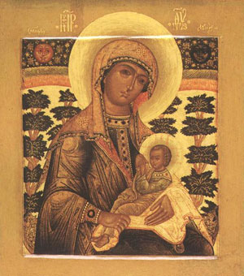
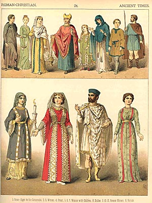

Вопрос ко всем православным.
Считаете ли вы, что правило, что женщина обязана входить в храм в юбке не устарело? Я не могу понять его смысла, хотя и выполняю его как положено. Неужели от того, что я буду в брюках, моя вера будет меньше?
Русская Православная Церковь (Московская Патриархия)--Морозов Николай
православный христианин
12.04.04 23:14
Ответ автору темы // Считаете ли вы, что правило, что женщина обязана входить в храм в юбке не устарело?
Этот вопрос не для слабого женского ума.
поэтому для его ответа необходимо следующее, а именно - апгрейд мозга.
Возможно несколько способов апгрейда:
1) Увеличение мыслительной способности женщины за счет увеличения количество извилин.
Для этого надо одеть на женщину платок (собственно дополнительные извилины) и подождать, пока он не подключится. Т.е. женщина должна в течении нескольких лет ходить в храм в юбке и платке. После этого проблема должна решится.
2) Увеличение мыслительной способности за счет подключения мозга мужа. Женщину надо выдать замуж (если еще не замужем). После этого задать этот вопрос мужу (одевать юбку/не одевать юбку) и как он скажет - так и деать.
3) Увеличение мыслительной способности за счет подключения мозга духовника. У женщины д.б. духовник, если нет - найти. Задать ему вопрос (одевать юбку/не одевать юбку) и как он скажет - так и деать.
Если способ 2,3 не возможен по причине отсутствия мужа или духовника, то способ 1 всегда действует.
Русская Православная Церковь (Московская Патриархия)-р.Б. Иоанн
православный христианин
модератор
14.03.04 20:29
"Почему сия благочестивая и глубокомысленная дискуссия продолжается?"
Да по той же причине, по какой и тема разгорелась - по гордыне своеволия и несмирения. Модератор говорит, что тема закрыта, надо просто это принять как данность, а не глубокомысленно анализироват причины...
P.S. Постинги с извинениями (как Алексея Толстых), разумеется, буду оставлять.
P.P.S. Кстати, женская часть дискутёров перестала писать после закрытия темы, чем, если смотреть непредвзято, посрамила обвинявших их в несмирении мужчин! :0))
Польская Православная Церковь-Светлана Дьякова
православный христианин
Интересно, что Вы называете "Святым"? юбку???? Это у Вас такое трепетное отношение к женщинам?
Хватит пустословить в пост! Займись делом.
Ольга Черепанова
агностик
*** Вот фрагмент Послания к Диогнету, который многие цитировали на форуме
-- Уже комментировал.
Тогда в мире не было принятио иметь одежду-унисекс.
Так какие различия в одежде императора и императрицы?
Чем женские длинные юбки отличались от мужских длинных юбок бОльшим, чем женские брюки от мужских?
Перечислите:)
Михаил Т.
баптист/евангелик
Тогда в мире не было принятио иметь одежду-унисекс.
Не говори: "отчего это прежние дни были лучше нынешних?", потому что не от мудрости ты спрашиваешь об этом. (Екклесиаст 7, 10).
Ольга Черепанова
агностик
намеки на необъодимость отделения верующих от других.
Но не по манере одеваться:)
Вот фрагмент Послания к Диогнету, который многие цитировали на форуме:
Христиане не отличаются от прочих людей ни страной, ни языком, ни житейскими обычаями.
Они не населяют где-либо особенных городов... и ведут жизнь, ничем не отличающуюся от других. Только их учение не есть плод мысли или изобретение людей, ищущих новизны, они не привержены к какому-либо человеческому учению, как другие. Но, обитая в эллинских и варварских городах, где кому привелось,
и следуя обычаям тех жителей в одежде, в пище и во всем прочем, они представляют удивительный и поистине невероятный образ жизни.
Живут они в своем отечестве, но как пришельцы... Для них всякая чужая страна есть отечество, и всякое отечество - чужая страна...
Они во плоти, но живут не по плоти. Находятся на земле, но суть граждане неба... Всего лишены, но всем изобилуют... Словом сказать: что в теле душа, то в мире христиане.
конец цитаты
И вообще вся логика творения мужчины и женщины говорит, что Бог их создал различными.
С "мужской и женской разновидностями человеческой природы, каковые разновидности передаются биологическим, половым путем?
Нельзя ли цитату из Бытия - которая говорит об этом?:)
Игорь ЕХБ
баптист
*** Ни в коем случае. Была только поставлена проблема – имеем 22-ю главу Второзакония. Если Вы из ВСЕЙ главы, из всех заповедей, которые в ней содержатся, говорите о необходимости соблюдать только одну из них, то напрашивается вопрос – а чем именно обусловлен именно такой выбор?
-- Ну я не говорю, что одну. Все-таки ради объективности. :-) Я считаю, что может быть какая-то мудрость и в разделении сеяния трав, и в одежде из разных шерстей... Я не ботаник, не знаю. Что кксается Втор. 22:5, то тут я не вижу никаких намеков на то, чтобы это было ритуального или гражданского характера заповеди. Все-таки про травы, про засевание и пр. тут есть намек на отделение израильского народа от других народов. Чем больше таких заповедей было введено, тем болльше народ Божий отделялся от окружающих народов. Потому что там и поле засевали, и одежду из любых материалов носили, и кисточек не было. И в каждой из них я вижу указание на какие-то духовные вещи, намеки на необъодимость отделения верующих от других. Хотя во многом иудаизм есть религия кастрюль и посуды, как кто-то сказал. А зачем дано то или иное часто не объясняется. Просто чтобы выделить израиль и дать им другую культуру.
А вот насчет разделения одежды у муж. и жен., тут трудно сказать, что другие народы этого не делали. Все-таки везде одежда у полов отличалась. Ну, может, были какие-то ритуалы у язычников, маскарады или извращения, которые не пресекались ихними культурами (как у нас теперь - шурА, например и т.д.). Просто если жаде подумать, то видно, что разделение на муж. и жен. одежды от Бога, оно не столько хочет выделить Израиль от других, сколко вводит норму морали, этики, эстетики, что ли. И потом, надо смотреть все в целом, всю Библию, не на одном месте делать выводы. Ну и видно, что для женщин есть одни предписания, для мужчин - другие. В 1 Кор. например написано про покрывало. И вообще вся логика творения мужчины и женщины говорит, что Бог их создал различными.
*** Понимаете, тут есть достаточно тонкая грань – что является моральным установлением, а что таковым не является.
-- Вообще-то принцип фундаментальных христаин гласит, что надо всё по возможности понимать сперва морально, пока сам текст не опровергнет это и не будет ясно указывать, что это гражданский или ритуальный закон, который для христиан не нужен.
*** Пример – гомосексуализм – моральное явление? Да, безусловно. Заповеди, касающиеся его – моральные установления? Возможно, Вы скажете, что да. Но Вы же сами прекрасно знаете, как Закон повелевает поступать с мужеложниками.
-- Не вижу проблем. Есть заповеди, которые в ВЗ были и моральными и гражданскими. Пересекались. Так мы и берем только моральную сторону, а гражданскую сторону Бог не давал Церкви исполнять, потому что НЕТ христианского госудраства, и не планируется, Церковь рассеяна по всей земле и по всем народам. Тут отличие от Израиля.
Поэтому - гомосексуализм есть не толко гражданское установление ВЗ, которое другие народы, не евреи могут и не соблюдать, это дело их личное, мирское, а вот моральное отношение к этому греху сохраняется и не уничтожается со сменой заветов.
*** И дальше так – если некто в порыве благородного гнева поступит с таковыми по этим заповедям, то будет ли на нем какая-то вина? Я затрудняюсь ответить на этот вопрос.
-- Конечною. будет. Тут и вариантов нет. Суд и казнь над нарушителями заповедей была только у Израильтян и во время ВЗ. А новозаветным сказано не мстить, не судить никого, благотворить, но, конечно и обличать, молиться, призывать ко Христу. Гражданский закон остался в прошлом за Израилем. У Церкви другие заповеди - Рим. 12-13, кажется, про послушание власти...
*** Не думаю, что стал бы осуждать такого человека за подобный поступок. Но и защищать тоже не стал бы. Такая вот половинчатость…
-- Ну какая половинчатость? Грех мы осуждаем, в том числе и гомосексуализм, везде про это можем говорить, призывать их каяться, а вот убивать, казнить и пр. Господь христианам не запвоедал.
*** Тут можно сказать только «Аминь» - таковым разбором мы с Вами, собственно, и занимаемся.
-- Этим занимаются богословские семинарии. :-) Я к сожалению, не семинарист и ничего такого не оканчивал. :-)
*** Но экзегет, как правило, руководствуется в этом «вынимании» собственными представлениями (личными или конфессиональными) по данному вопросу.
-- Не должен. Это тогда не исследование, а подгонка. Не экзегетика, а айсигетика.
*** Наиболее яркие примеры – тринитарные споры IV века (отчасти повторяемые в настоящее время в полемике с антитринитариями современности) и христологические V-го.
-- Я считаю, что обеъктивная экзегетика учения о Троице может привести только к одному выводу, что Бог есть Троица. Все другие выводы: ложные. Богословы антитринатисты пытались не из текста вывести смысл, а подогнать все тексты под идею, что Бог один и значит надо как-то попытаться объяснить, почему много намеков на то, что Христос Бог. И Дух Святой тоже. Вот и все дела. Экзегезы тут нет.
*** Также сюда можно отнести современную полемику между разными протестантскими деноминациями по поводу толкования 14-й главы 1-го Послания Коринфянам.
-- Также я считаю, что если подходить строго экзегетически, то оснований для учения пятидесятников (если вы о них), нет. Это опять же богословское жульничество и подгонка текста под их странный мистический опыт. И всё.
*** Соло скриптура, говорите? Тогда смотрите сюда – имеем Четвертую Заповедь. К какому дню недели она относится – к субботе или к воскресению?
-- Я думаю, что вообще теперь ни к субботе и не к воскресенью. Воскресенье не есть суббота. :-)
*** Можно ли только из Писания вывести что в новозаветное время суббота была заменена воскресением?
-- А кто это утверждает? Про замену-то?... Мы например говорим, что суббота не перешла на воскресенье, а мы вошли в субботу, теперь для христаин все дни суббота. Мы вошли в покой. И разумеется, это учение полностью выводится только из Писания. Ниоткуда больше. Нельзя выводить учения и догматы не из Писания. Соло скриптура.
*** Нет, почему и существуют движения адвентистов и баптистов седьмого дня.
-- Это заблуждения, потому они и существуют. Хотят и ветхий закон иметь, и новый. Не учитывая заветы и последние указания Писания о этом предмете. (Надеюсь, про субботу не будем рассуждать, а то это длинная тема получится, да и книг по этой теме много и без нас).
*** Упоминания Нового Завета о том, что христиане собирались «в первый день недели» можно ведь перетолковать и «по-субботски»…
-- Нельзя. Суббота была последним днем недели. :-)
*** От моего желания не зависит отненсение заповеди. :-) Это не произволльное дело.
Ну, возможно, это только Вам так кажется… :-).
-- Возможно, что это вам кажется, что мне кажется. Я говорю КАК это ДОЛЖНО быть.
*** Правильно, но вот в чем загвоздка – кто более толковее сказал, кому более показалось, что именно его доводы справдливее, тот и прав.
-- Дык ежели вы с ним не согласны, исследуйте сами, приведите аргументы против. Кто мешает? У вас тоже есть Писание, есть Дух Святой (если вы рождены свыше). Или просто верьте тому, кому вам поверится.
*** И получаем, что каждый сам себе Папа Римский. И в этом, на мой взгляд, существенный недостаток всех протестантских течений.
-- Не каждый. Это вообще не допускается. Нельзя толковать произвольно и по свеому мнению. Тут есть определенные правила толкования. Они общие не только для Библии, а вообще для любой литературы. Что говорит Автор - основной вопрос. Тут не может быть много толкований. Есть обеъктивная истина, что содеоржится в Писании, и не надо толковать, надо брать то, что записано. Возможно, что даже чисто математически. Вот написано так. И точка. Как это я сам себе толкователь? Так не поулчится. Потому что толковать надо правильно. Есть специалисты, есть школы толкования, опыт, различные выводы, логика, согласие верующих. Всё это учитывается. Я не знаю о каком сам себе папа римский вы говорите. Да, я обязан как христианин все проверять, не брать все слепо на веру только потому, что там папа или отцы написали. Они тоже сами себе папы, тоже субъективные толкователи. Надо смотреть и их, и других. Все аргументы всех сторон, делать выводы, самому оценивать. Да и я считаю, что Дух Святой внутри нас тоже не спит и дает нам понимание, ощущение что правда или ложь. Если мы Его слушаем, естественно. Тут и рациональность и мистика. Но мистика не ведущая сила, а скорее интуитивная.
*** Гладко на бумаге, но…
-- Не на бумаге. Так должно быть. Если вы честный экзегет.
*** Вот если кто-то Вам убедительно докажет по Писанию, что Вы не правы – ну скажем в вопросе этой темы, то сможете Вы отказаться от Ваших теперешних взглядов?
-- Теоретически - конечно. Просто я знаю, что это не сделают. Потому что я на стороне тех, кто тут прав. :-)
*** Да, да и еще раз да. Золотые слова – без толкования не обойтись. Но дело в том, что как Вам прекрасно известно, существует несколько герменевтических школ. Какой из них отдать предпочтение? Как это определить?
-- Тут уж вы решайте сами... Как определить - то толкование, что более буквально и ближе к тексту и не противоречит себе, то и правильное.
*** Если быть честными перед собой и перед Богом, то можно увидеть преемственность в учении, начиная от времени Апостолов и до нынешнего времени.
-- Нельзя.
*** Игорь, давайте все же не путать обетования Бога (т.е. Его обещания) и Его же заповеди, данные людям в конкретную историчексую эпоху…
-- Хорошо. Заповедь : плодитесь и разможайтесь тоже по-вашему не запвоедь а обетование? :-) В иудаизме она считается первой мицвот. От эпох она не меняется, хотя даже и не повторена в Новом. Это самый лучший пример. Можно вспомнить и еще...
*** Все? Прямо-таки все? Простите, я действительно не понял. Что, Вы считаете, что нам нужно выполнять все ветхозаветные заповеди, и бытовые и юридические?
-- Я не говорю, что НАДО выполнять. Я говорю о том, что НИ ОДНА заповедь Богом не отменена. Христос же сказал, что пришел не отменить заповеди, а исполнить (наполнить - перевод со ЦСЯ). Ни одна йота закона не отменена, она есть, НО перекрывается Новозаветными истинами. В принципе любой ВЗ заповеди можно найти аналог в Новом. Конечно, многгие исполняются духовно, потому что заповеди ВЗ были образами, а в Новом они реальны. Закон оь жертвоприношении в хораме не отменен, но он осуществлен во Христе, в Его смерти на кресте, и христаине возносят фимиам Богу в виде молитв и покаяния. Внешнее другое, но сам закон не отменен, а наполнен смыслом. Подлинным смыслом.
Ритуальные законы ВСЕ осуществляются во Христе, в вере нашей в Него, в Его деле спасения. Но смаи пос ебе они не отменены, они просто выразились во Христе. Понятно?... согласны?
*** Пункт 3, на мой взгляд.
-- Что-то исполнять, что-то нет.
*** Критерий, на мой взгляд, опять-таки весьма прост. Заповедь повторена в Новом Завете – выполнять ничтоже сумяшеся :). А не повторена – надо подумать…
-- Думать всегда надо. НО... дело в том, что не все повторено. :-) А явно что не отменено. Пример: с той же заповедью о плодитесь и размножайтесь...
Но я бы с интересом послушал КАК вы будете думать? Какой механизм и принципы, что вы бы применили? Как вы тогда определите что исполнять а что нет? Какой школы толкования вы держитесь?
Ольга Черепанова
агностик
Вот этот стих из послания:
6 Ибо если жена не хочет покрываться,
то пусть и стрижется;
если жене стыдно быть остриженной или обритой, пусть покрывается.
(1Кор.11:6)
Если жене НЕ стыдно быть остриженой ИЛИ обритой - то, разумеется, она может стричься или бриться и не покрываться:)
Так как трудно найти женщину, которой стыдно было бы постричься ( побриться предположим не многие захотят по эстетическим соображениям)
то, сл но , стричься можно.
Также - что значит НЕ стричься?
Это значит за всю жизнь не срезать ни сантиметра волос:)
Женщина с волосами хоть раз острижеными - уже стриженая. Неважно какой длины у нее волосы - "под мальчика", до плеч, до лопаток...
Украинская Православная Церковь (Московский Патриархат)-Олег Д.
православный христианин
Сами же понимаете, что есть одна человеческая природа, в которой есть мужская и женская ее разновидности. :-)
"Та-а-ак!" - удовлетворенно пробормотал инквизитор - "к пытке прибегать на этот раз не будем, он сам сознался" :)))
Причем со слов признавшегося - от матери к сыну при обычном рождении "разновидность мужской природы" передается биологическим, половым путем:)
Украинская Православная Церковь (Московский Патриархат)-Олег Д.
православный христианин
Игорь ЕХБ - баптист Да не придирайтесь к словам, Ольга. Будьте проще. :-) Сами же понимаете, что есть одна человеческая природа, в которой есть мужская и женская ее разновидности. :-)
"Та-а-ак!" - удовлетворенно пробормотал инквизитор - "к пытке прибегать на этот раз не будем, он сам сознался" :)))
Поведайте ка нам теперь о соединении мужской и женской разновидностей в единой человеческой природе. Ведь для того, чтобы уврачевать человеческую природу Господь должен был принять ее целиком.
Украинская Православная Церковь (Московский Патриархат)-Олег Д.-
православный христианин
Вы так и не определились какой (М/Ж) одеждой являются трусы? Не боитесь впасть во грех "трусоношения"? А ежели это одежда женская???
Ольга Черепанова-
агностик
/// Обсуждаемый в теме вопрос к аскетике отношения не имеет.///
- К аскетике имеет отношение все происходящее в нашей жизни.
И в том чисте внешнее делание христианина,включая и его одежду.Аскетика уделяет внимание всем,без исключения, сторонам жизни человека (и дает им оценку) будь то - духовные,душевные,физиологические потребности человека,будь то особенности его поведения и стиля одежды.И это не просто внешняя оценка,а оценка с обозначением смысла и роли рассматриваемых явлений и их влияния на судьбу человека в вечности.
Этот вопрос имеет самое прямое отношение к общему взгляду христианства на женщину.Православную точку зрения (так сказать,- эталон),можно без труда узнать.
Поверте мне не трудно дать вам информацию.Могу выслать по мылу несколько работ по этому вопросу (об аскетике).Могу освятить в свете православной аскетики частный вопрос о ношении женских брюк (причем сделаю это на основе имеющихся у меня источников,при минимальном количестве своих коментариев).Вот было бы желание узнать и понять все это?
/// Церковь не предъявляет требований не носить женские брюки. Потому непонятно - о чем Вы хотели рассказать?///
- Очень хорошо на этот вопрос отвечает в одной из своих книг д.А.Кураев.Т.е. он говорит не прямо о женских брюках (разве речь только об этом?),мужчинам тоже нерекомендуется носить некоторые образцы одежды.
Отец Андрей говорит о том,что в Церковных канонах,правилах и предании многие современные вопросы не получили буквального освящения ,например,о марксизме ( о множестве современных извращений и т.д.), ничего не говорится.Но это не значит,что христианин может быть марксистом и может быть извращенцем.Из опыта Церкви мы можем дать совершенно адекватную оценку всем современным явлениям.
Просто у нас есть для этого очень простые критерии,а именно:
- если то или иное действие человека вызванно его страстными желаниями и привязанностями, то это вредит человеку,если оно вызванно его стремлением к изменению своей страстной природы и,тем самым,направлено на сотрудничество с Богом,то это есть - Благо!
Так вот, теперь только остается узнать,чем вызванно желание женщины пойти в храм в брюках и т.д.,и вообще чем вызванно ее желание носить любую одежду с ярко выраженной сексуальной ориентацией.
Запомните,все Церковные требования носят рекомендательный,а не обязательный характер.Например,если врач прописывает вам лекарство от болезни и требует того,чтобы вы его непременно принимали, последнее слово,принимать это лекарство или нет,все равно остается за вами.
А вообще-то проблема ношения той или иной одежды христианами,не самая основная и первостепенная.В любом случае христианство не с этого начинается.И касается эта проблема исключительно воцерковленных людей.Как они решат ее,- зависит от их степени духовного роста и силы веры (т.е. на сколько близко они могут подойти к эталону).Христиане ведь тоже все разные.
Поэтому я лично не понимаю,чего вас то это волнует?
Я еще раз,настоятельно,рекомендую вам лучше познакомиться с христианством.Это конечно требует времени,но только тогда вы сможете адекватно судить о тех или иных христианских оценках - МИРА и месте в нем человека!
А так вы все время ципляетесь за букву,но вкладываете в нее свой смысл.А потом этому вложенному,вашему,смыслу и даете оценку.
Зачем это вам нужно? Неужели ненависть к христианству настолько сильна?
Всего доброго!
Русская Православная Старобрядческая Церковь-Утюжников Никола
православный христианин
Здравствуйте, Игорь!
К превеликому сожалению, специфика нашего появления в Сети позволяет нам обмениваться только одним сообщением в сутки.
*** А, простите, почему Вы решили, что я отвергаю заповедь Божию? Я только показал в своем сообщении, что, на мой взгляд, весьма некорректно выхватывать только 5-й стих из контекста 22-й главы Второзакония.
-- Разве вы не хотели сказать, что Втор. 22:5 также как и другие вами процитированные, теперь не нужно исполнять? :-)
Ни в коем случае. Была только поставлена проблема – имеем 22-ю главу Второзакония. Если Вы из ВСЕЙ главы, из всех заповедей, которые в ней содержатся, говорите о необходимости соблюдать только одну из них, то напрашивается вопрос – а чем именно обусловлен именно такой выбор?
Всё верно. Я знаю, чтое сть учение, хвучащее по украински: то, що до жидив, до сэбэ не тулив... Но я думаю, что нельзя отвергать все ветхозаветные устрановления, которые имеют моральный характер.
Понимаете, тут есть достаточно тонкая грань – что является моральным установлением, а что таковым не является. Пример – гомосексуализм – моральное явление? Да, безусловно. Заповеди, касающиеся его – моральные установления? Возможно, Вы скажете, что да. Но Вы же сами прекрасно знаете, как Закон повелевает поступать с мужеложниками. И дальше так – если некто в порыве благородного гнева поступит с таковыми по этим заповедям, то будет ли на нем какая-то вина? Я затрудняюсь ответить на этот вопрос. Не думаю, что стал бы осуждать такого человека за подобный поступок. Но и защищать тоже не стал бы. Такая вот половинчатость… И тут мы подходим к следующему пункту в нашей беседе:
*** Но – возникает естественный и логический вопрос – а как определить к какой категории относится то или иное место Закона?
-- Для этого есть экзегетика, богословие, которое этим самым и призвано заниматься. Нельзя слепо и бездумно брать что-то из Ветхого завета и не разобравшись отвергать или применять. Надо разбираться.
Тут можно сказать только «Аминь» - таковым разбором мы с Вами, собственно, и занимаемся. :-).
Ну экзегет же как раз не должен полагаться на личные взгляды. Как раз экзегетика занимается не выдумыванием, а выниманием смысла из Писания.
Правильно. Но экзегет, как правило, руководствуется в этом «вынимании» собственными представлениями (личными или конфессиональными) по данному вопросу. Наиболее яркие примеры – тринитарные споры IV века (отчасти повторяемые в настоящее время в полемике с антитринитариями современности) и христологические V-го. Также сюда можно отнести современную полемику между разными протестантскими деноминациями по поводу толкования 14-й главы 1-го Послания Коринфянам.
*** Тут мы, на мой взгляд, видим порочность принципа “sola scriptura” во всей его полноте.
-- Я этого не вижу. Только соло скриптура. Потому Писание есть Слово Божье, которое и должно определять наше хождение в жихзни. Если добавить еще и человеческие книги, то этому не будет конца и мы потонем в талмудах.
Соло скриптура, говорите? Тогда смотрите сюда – имеем Четвертую Заповедь. К какому дню недели она относится – к субботе или к воскресению? Можно ли только из Писания вывести что в новозаветное время суббота была заменена воскресением? Нет, почему и существуют движения адвентистов и баптистов седьмого дня. Упоминания Нового Завета о том, что христиане собирались «в первый день недели» можно ведь перетолковать и «по-субботски»…
От моего желания не зависит отненсение заповеди. :-) Это не произволльное дело.
Ну, возможно, это только Вам так кажется… :-). Почему? Смотрите –
Где доводы убедительнее, где более согласуется с Писанием, тот и прав.
Правильно, но вот в чем загвоздка – кто более толковее сказал, кому более показалось, что именно его доводы справдливее, тот и прав. И получаем, что каждый сам себе Папа Римский. И в этом, на мой взгляд, существенный недостаток всех протестантских течений.
*** Кроме, разумеется, личных пристрастий.
-- От них надо отказываться.
Гладко на бумаге, но… Вот если кто-то Вам убедительно докажет по Писанию, что Вы не правы – ну скажем в вопросе этой темы, то сможете Вы отказаться от Ваших теперешних взглядов?
Могу дать вам ссылку на книгу по правилам герменевтики. http://rusbaptist.stunda.org/dop/g00.htm
Почитайте, возможно поймете как можно понимать Библию. Все равно без толкования ее вам не обойтись.
Да, да и еще раз да. Золотые слова – без толкования не обойтись. Но дело в том, что как Вам прекрасно известно, существует несколько герменевтических школ. Какой из них отдать предпочтение? Как это определить?
Даже ваше не соло скриптура основано на чьих-то субъективных, как вы сказали, толкованиях. Только канонизированных какой-то конфессией. :-)
Если быть честными перед собой и перед Богом, то можно увидеть преемственность в учении, начиная от времени Апостолов и до нынешнего времени.
Да, в Новом некоторые заповеди повторены. Некоторые нет. Но вот никто же не отменядл обетование Бога что не будет всемирного потопа. Радуга же есть. Верно?
Игорь, давайте все же не путать обетования Бога (т.е. Его обещания) и Его же заповеди, данные людям в конкретную историчексую эпоху… Одно дело – ветхозаветные заповеди, ино дело – новозаветные…
Значит, и в наше время некоторые заповеди, бывшие в ветхом завете, действуют. :-) Я считаю, что вообще все действуют. Просто Новый их покрывает собой.
Все? Прямо-таки все? Простите, я действительно не понял. Что, Вы считаете, что нам нужно выполнять все ветхозаветные заповеди, и бытовые и юридические?
Но я бы хлтел тогда услышать ВАШЕ предложение - как вы хотите относиться кзаповедям Ветхого завета: 1) все отвергнуть,
2) все исполнять,
3) что-то исполнять, что-то нет.
По 2 требуются ваши разъяснения - как исполнять ветхое, если есть новое? По 3 - как определить что исплнять что нет?
Пункт 3, на мой взгляд. Критерий, на мой взгляд, опять-таки весьма прост. Заповедь повторена в Новом Завете – выполнять ничтоже сумяшеся :). А не повторена – надо подумать…
Спасибо.
Да не за что…
С уважением,
Н.
Русская Православная Церковь (Московская Патриархия)-Алексей Толстых
православный христианин-(новоначальный)
Так на иконе Богородица с неприкрытым срамом изображена?
Зато сколько споров было по этому поводу.
Ладно, проехали, так уж и быть.
Украинская Православная Церковь (Московский Патриархат)-
Курмояров Дмитрий Валерьевич- православный христианин
Там огромное количество святоотеческих цитат с раскрытием смысла православной аскетики (и обсуждаемых вами частных вопросов в ее свете).
Обсуждаемый в теме вопрос к аскетике отношения не имеет.
Только если для страдающих страстью осуждения можно будет что либо посоветовать:)
Те,немногие требования,которые Церковь предьявляет
Церковь не предъявляет требований не носить женские брюки.
Это проблема некоторых немощных в вере, которым нужно разъяснять их ошибки.
( что собственно в теме и происходило:)
Церковь - это наша любящая мать.Она заботится о нашем здоровье всеми возможными средствами (хотя часто идет на уступки нашей несгибаемой воле ко греху).Она заботится о здоровье женщины.Я могу показать это.
Вы хотите услышать?
Церковь не предъявляет требований не носить женские брюки. Потому непонятно - о чем Вы хотели рассказать?
Русская Православная Церковь (Московская Патриархия)-Андрей Панов
православный христианин
(новоначальный)
/...Очень легко любить все человечество, очень трудно - данного человека... Это, кажется, Достоевский. Любви надо учиться, нельзя ведь заставить себя любить... Недаром, в Писании Сам Господь назван любовью... И любовь поставлена выше и веры, и надежды...
Панов Андрей Светлане Дьяковой!
Согласен.
Спаси Господи!
P.S. Хотелось бы добавить. Сегодня то, что на нас, не совпадает не только по названию, но даже и по внешнему виду с той, старой одеждой. Сегодняшняя юбка - не та, что раньше (хотя бы мини). И брюки мужские становятся какими-то другими (в смысле - или шорты, или смокинг, вечерний костюм и т.д.). Но в храм в чём нам всё-таки ходить? Наверное, во-первых, как позволит нам наша совесть в купе с тем, что мы себе сами создали, как образ поведения в храме. Во-вторых, если что-то не сообразуется с нашей совестью, и возникают какие-то сомнения (см. ТЕМУ), то, вероятно, батюшка наш сможет помочь нам сделать выбор и в этом "сложном вопросе".
И помнить, что "спасение утопающих дело рук самих утопающих".
Русская Православная Старобрядческая Церковь-Утюжников Никола
- православный христианин
*** Признаться, весьма и весьма рад общению с Вами
-- Приветствую, Никола.
*** А, простите, почему Вы решили, что я отвергаю заповедь Божию? Я только показал в своем сообщении, что, на мой взгляд, весьма некорректно выхватывать только 5-й стих из контекста 22-й главы Второзакония.
-- Разве вы не хотели сказать, что Втор. 22:5 также как и другие вами процитированные, теперь не нужно исполнять? :-)
*** Этот стих в контексте предыдущих и последующих стихов показывает, что в данной главе мы имеем дело с заповедями, данными Израильскому народу, которые он должен был соблюдать во время жизни на Земле Обетованной, до пришествия Спасителя.
-- Всё верно. Я знаю, чтое сть учение, хвучащее по украински: то, що до жидив, до сэбэ не тулив... Но я думаю, что нельзя отвергать все ветхозаветные устрановления, которые имеют моральный характер.
*** Но – возникает естественный и логический вопрос – а как определить к какой категории относится то или иное место Закона?
-- Для этого есть экзегетика, богословие, которое этим самым и призвано заниматься. Нельзя слепо и бездумно брать что-то из Ветхого завета и не разобравшись отвергать или применять. Надо разбираться.
*** Таким образом, толкование того, к какой категории относится то или иное постановление Пятикнижия отдается целиком и полностью «на съедение» экзегету, на его личные взгляды и предпочтения.
-- Ну экзегет же как раз не должен полагаться на личные взгляды. Как раз экзегетика занимается не выдумыванием, а выниманием смысла из Писания.
*** Тут мы, на мой взгляд, видим порочность принципа “sola scriptura” во всей его полноте.
-- Я этого не вижу. Только соло скриптура. Потому Писание есть Слово Божье, которое и должно определять наше хождение в жихзни. Если добавить еще и человеческие книги, то этому не будет конца и мы потонем в талмудах.
*** В самом деле, Игорь ЕХБ захотел – и отнес это постановление к категории моральных установлений.
-- От моего желания не зависит отненсение заповеди. :-) Это не произволльное дело.
*** А вот иной экзегет баптистов отнес его же к гражданскому закону… Третий баптистский проповедник взял – да и отнес всю 22-ю главу Второзакония к моральному закону… Каждый из них будет приводить свои доводы в свою защиту – и нету решительно никаких оснований для предпочтения одного толкования другому.
-- Почему нет никаких решительно оснований? По-моему они есть. Где доводы убедительнее, где более согласуется с Писанием, тот и прав.
*** Кроме, разумеется, личных пристрастий.
-- От них надо отказываться.
*** Поймите, все это сказано безотносительно моей личной позиции к рассматриваемому вопросу.
-- Могу дать вам ссылку на книгу по правилам герменевтики. http://rusbaptist.stunda.org/dop/g00.htm
Почитайте, возможно поймете как можно понимать Библию. Все равно без толкования ее вам не обойтись. Даже ваше не соло скриптура основано на чьих-то субъективных, как вы сказали, толкованиях. Только канонизированных какой-то конфессией. :-)
Если невозможно определить исполнять заповедь из Библии или нет - то тогда логично вытекает, что вообще Библию понимать нельзя. :-) Вы это хотите сказать?
*** Говоишь: не воруй, так написано в заповеди, а они грят: тогда надо и обрезываться.
А по этому поводу сказано уже в Новом Завете – «кто крал, вперед не кради». Так что воровать – нехорошо перед Богом.
-- Да, в Новом некоторые заповеди повторены. Некоторые нет. Но вот никто же не отменядл обетование Бога что не будет всемирного потопа. Радуга же есть. Верно? Значит, и в наше время некоторые заповеди, бывшие в ветхом завете, действуют. :-) Я считаю, что вообще все действуют. Просто Новый их покрывает собой.
*** В данном случае это не «обычный прием» ;-), а попытка анализа контекста 22-й главы Второзакония.
-- Об этом месте мы вообще тут не говорили, как вы заметили. :-)
Но я бы хлтел тогда услышать ВАШЕ предложение - как вы хотите относиться кзаповедям Ветхого завета: 1) все отвергнуть,
2) все исполнять,
3) что-то исполнять, что-то нет.
По 2 требуются ваши разъяснения - как исполнять ветхое, если есть новое? По 3 - как определить что исплнять что нет?
Спасибо.
Русская Православная Старобрядческая Церковь-Утюжников Никола
православный христианин
Здравствуйте, Игорь!
Признаться, весьма и весьма рад общению с Вами :-). Но разбор Вашего сообщения хотелось бы начать с конца.
Кто надоумил вас отвергать заповедь Божью?
А, простите, почему Вы решили, что я отвергаю заповедь Божию? Я только показал в своем сообщении, что, на мой взгляд, весьма некорректно выхватывать только 5-й стих из контекста 22-й главы Второзакония. Этот стих в контексте предыдущих и последующих стихов показывает, что в данной главе мы имеем дело с заповедями, данными Израильскому народу, которые он должен был соблюдать во время жизни на Земле Обетованной, до пришествия Спасителя. Вы верно пишете, что
Гражданский закон, таким образом для христиан не имеет прямого действия.
Ритуальный. Это описание всех служб, ритуалов, условностей, способов отличия народа Израиля от других народов и т.д. Тоже имеет для христиан только уже духовное значение, как образы. Потому что приходил Христос, все исполнил, что ритуалы намекали через образы, появлся Новый Завет. У него более совершенные правила и заповеди. Их христиане и исполняют. Потому ветхозаветное уступило место новозаветному по форме.
А вот моральный закон - он-то не отменен, и даже усилен.
Но – возникает естественный и логический вопрос – а как определить к какой категории относится то или иное место Закона? Вы сами пишете, что
поэтому задача экзегета при толковании Писнаия - определять, что етсь та или иная норма в Писании. К чему она относится? К моральному закону, вечному устройству мироздания или к временным, ушедшим уже ритуальным и гражданским законам Израиля.
Таким образом, толкование того, к какой категории относится то или иное постановление Пятикнижия отдается целиком и полностью «на съедение» экзегету, на его личные взгляды и предпочтения. Тут мы, на мой взгляд, видим порочность принципа “sola scriptura” во всей его полноте. В самом деле, Игорь ЕХБ захотел – и отнес это постановление к категории моральных установлений. А вот иной экзегет баптистов отнес его же к гражданскому закону… Третий баптистский проповедник взял – да и отнес всю 22-ю главу Второзакония к моральному закону… Каждый из них будет приводить свои доводы в свою защиту – и нету решительно никаких оснований для предпочтения одного толкования другому. Кроме, разумеется, личных пристрастий.
Поймите, все это сказано безотносительно моей личной позиции к рассматриваемому вопросу. А что касается меня лично, то гомосексуализм, безусловно, мерзость пред Богом. Но хватит об этом.
Говоишь: не воруй, так написано в заповеди, а они грят: тогда надо и обрезываться.
А по этому поводу сказано уже в Новом Завете – «кто крал, вперед не кради». Так что воровать – нехорошо перед Богом.
Вопрос в исполнении предписаний закона и нужно ли это всё исполнять христианам. Это обычный прием, я знаю. :-)
В данном случае это не «обычный прием» ;-), а попытка анализа контекста 22-й главы Второзакония.
С уважением,
Н.
Русская Православная Церковь (Московская Патриархия)-Алексей Толстых
православный христианин-(новоначальный)
И всё же странно... выходит, что Бог создал человека со срамными органами?
Нет, все изменилось после грехопадения.
Украинская Православная Церковь (Московский Патриархат)-Сергей Кр.
православный христианин
Тот срам, который женщины прикрывают бюсгалтером, мужчинам прикрывать не стоит.
http://deva-maria.narod.ru/Ikoni71.htm
Икона Божией Матери "Млекопитательница".
находится на Афоне.
В теме уже об этом было.
Давайте Вы будете поаккуратнее в выражениях.
27 Когда же Он говорил это, одна женщина, возвысив голос из народа, сказала Ему: блаженно чрево, носившее Тебя, и сосцы, Тебя питавшие!
(Лук.11:27)
P/S Кстати в толкованиях на Апокалипсис то же есть о Христе.
Русская Православная Церковь (Московская Патриархия)-Алексей Толстых
православный христианин
Мужчины обделены, они юбки не носят
И кто же их обделил?%
Картинку с римскими христианами в юбочках запостить?
т е - Вы ради удобства выбрали брюки ( как изнеженные женщины, на которых не хотели походить римляне) - и ради удобства - с неприкрытым срамом ходите?
Вы пояняли после детальных расспросов, что срам это таз, который есть и у Вас.
Срам сраму рознь.
Напоминаю - Вы говорите о тазе.
Итак - уже не так чтобы у мужчин вообще срама не было, но типа рознь?
И в чем? ( в контексте прикрытия неприкрытия брюками)
Русская Православная Церковь (Московская Патриархия-Алексей Толстых
православный христианин-(новоначальный)
P/S Не вижу ответа на вопросы ( если пропустила, извиняюсь):
1 Вы писали что женщины в брюках кажутся Вам голыми.
Вопрос был - а если женщина скажет, что вы в брюках кажетесь ей голым?
Мужчины обделены, они юбки не носят, так получилось, а вот у женщин есть выбор, могут юбку надеть.
2 Насчет срама проясните таки.
Если брюки срам не прикрывают, как Вы писали - то как Вы в них ходите в храм?
Вы пояняли после детальных расспросов, что срам это таз, который есть и у Вас.
Срам сраму рознь. Тот срам, который женщины прикрывают бюсгалтером, мужчинам прикрывать не стоит.
Русская Православная Церковь (Московская Патриархия)-Алексей Толстых
православный христианин
Не совсем понял к чему этот стих. Тогда женщины брюки не насили, а тот монах давненько видимо женщин не видел...
А он и в стихе их не видел.
Он увидел юбку...
Чувствуете отношение к юбке?:)
Круче чем у Вас к брюкам..
То есть - дело не в покрое одежды, а в ассоциациях. Разве нет?:)
P/S Не вижу ответа на вопросы ( если пропустила, извиняюсь):
1 Вы писали что женщины в брюках кажутся Вам голыми.
Вопрос был - а если женщина скажет, что вы в брюках кажетесь ей голым?
2 Насчет срама проясните таки.
Если брюки срам не прикрывают, как Вы писали - то как Вы в них ходите в храм?
Вы пояняли после детальных расспросов, что срам это таз, который есть и у Вас.
Польская Православная Церковь-Светлана Дьякова
православный христианин
Андрей, я думаю, Вы очень правильно чувствуете. Собственно, это и есть главное: как видеть человека, а не старого, молодого, красивого, безобразного... И как сделать, чтобы было дать от себя больше, чем раздражение, усталость, свои заморочки, свое честолюбие... и проч.
Очень легко любить все человечество, очень трудно - данного человека... Это, кажется, Достоевский. Любви надо учиться, нельзя ведь заставить себя любить... Недаром, в Писании Сам Господь назван любовью... И любовь поставлена выше и веры, и надежды...
Спаси Вас Господь, пусть у Вас все будет хорошо.
Русская Православная Церковь (Московская Патриархия)-Ольга Г.
православный христианин
/В ответ на 803 197/
Панов Андрей Светлане Дьяковой!
Да, вы правы. Аскеза не цель, но сглавное средство для достижения цели. Так, чтобы, проходя мимо роскошных витрин, не текли бы безудержно слюни. И точно также, проходя мимо... да чего угодно. "Если глаз твой соблазняет тебя...". Вот таким образом (умерщвлением желаний плоти), мне кажется, и можно было бы смотреть и не обольщаться: на красивых женщин, на красивые авто, да на что угодно. И если вдруг будет тонуть красивая женщина, а рядом кто-то другой - как заметить этого "другого"? Не судить по внешнему, а попытаться увидеть рядом человека, ближнего своего. Это не так просто, как кажется. Уступить место в автобусе. Кому? Бабушке с дедушкой, или симпатичной женщине? Как человек становится ближним нашим? Как только мы его стали замечать. И тогда мы его полюбили. Что-то стали делать для него. И вдруг, он что-то сделал в ответ ужасное. Как дальше? Простить, и снова полюбить. Или отойти. Это всё возможно, если ты управляешь своими чувствами, своей плотью. А не эта крайняя плоть управляет тобой. Плоть - это то, что без души и духа. И она часто диктует, что нам делать, как поступить.
И бороться надо, конечно же не чревоугодием, а со своей плотью, своим желудком, вкусом. Авва Дорофей пишет, что один бес сидит в нашем горле и управляет нашим вкусом (отсюда что-то нам нравится, а что-то не вкусно), а другой - в животе (и отсюда безудержное желание набить брюхо и т.д.).
Так надо ли учиться аскезе? Чтобы научиться любить Бога? Чтобы научиться подавать милостыню? Чтобы научиться заставлять себя уступить место в транспорте, даже если ты после тяжёлой работы? Чтобы поднести бабуле тяжёлые сумки по ступенькам? Чтобы отдавать хотя бы десятину своего милосердия?
Быть мудрым, чтобы уметь правильно смирять себя перед искушениями и не сломаться. Даже частое хождение в церковь может привести к прелести! (У нас таких видел).
Где-то слышал об одном докторе, который всё отдавал больным, в любое время суток выезжал, любил людей. Весь город любил его. Но после его смерти, священник сказал его жене, что он это делал не для других, а ради себя, своей гордыни, тщеславия. (Это очень телеграфно, конечно, история более длинная).
А ведь, действительно, за брюками или короткой юбкой мы не видим человека, ближнего своего. А как научиться увидеть не только плотское, но и разглядеть свою сестру (или собрата)?
Спаси Господи!
Ольга Черепанова
агностик
двух одинаковых длинных рубашек;-}
-- Про рубашки там не написано. Написано про одежды кожанные. А какие они - не известно.
Нет:) Там написано именно про хитоны ( длинные рубашки), а не про какую либо иную одежду.
см номер Стронга 03801
По тексту отличались также.
Нет:)
Надо смотреть ВСЕ ссылки по данному вопросу
Пример: практика разводов в ВЗ "разъясняет" - про одну плоть из Бытия?
Это не гадание, это вывод на основе Втор. 22:5 и логики творения...
Вы уверены что знаете логику творения?
На основе Втор 22-5 не стоит делать выводов о книге Бытия:)
Нет, одежды Адама И Евы различались
Цитату из Бытия:)
Бог не мог давать Втор. 22:5, а сам же делать людям одинаковые одежды...
Почему нет?
По жестоковыйности...
Или как разрешение есть животных после запрета..
Ольга Черепанова
агностик
*** Если Вы полагаете, что "мужская разновидность человеческой природы" передается половым путем, то как она передалась Христу?
-- Так Иисус же был создан в утробе Марии... Какие проблемы?
Что Вы называете "половым путем"?
Я думала - зачатие с участием мужчины.
А Вы что имели в виду?
Русская Православная Церковь (Московская Патриархия)-Ольга Г.
православный христианин
Меня устраивает в этой эпохе разделение ождежды на мужскую и женскую. Ведь тогда женщины не ходили в этих кальсонах, верно? :-)
Тогда, сударь, были панталоны, которые теперь трансформировались кальсоны. Кальсоны-то в Вашем гардеробе есть, а? Или предпочитаете мёрзнуть из принципа? ;)
А про приличность одежды аристократии - это уже совсем другой вопрос... Мы пока про различия в одежде говорим
Ну так и замечательно. Придётся и Вам тогда повторить тот же самый вопрос - чем принципиально отличаются женские свитер, рубашка, футболка, кеды, кроссовки, плащи, куртки от мужских?
Русская Православная Церковь (Московская Патриархия)-Ольга Г.
православный христианин
-- Для кого тогда порнография и просто реклама с обнаженными женщинами? :-) Вы очень уж высокого мнения о мужчинах...
Реклама и порнография передаёт обнажённое тело или полуобнажённое прямолинейно, как оно есть, и обязательно в такой форме, чтобы вызывать соответствующие реакции. В искусстве же ключевая цель показать эстетику, красоту обнажённого тела, поэтому художник использует соответствующее приёмы, в особенности символизацию или полное сокрытие определённых частей тела так, чтобы не концентрировать на них внимание зрителя. Впрочем извините, но Вам этого не понять... :)
-- Ну на чернильницу вряд ли. Но на голую натьуру - непременно. Даже если до этой натуры у него мысли были о другом. Так уж мужики устроены... Снизойдите уж...
Зачем они нам нужны (кроме, конечно, что они голые там изображены - это для любителей клубнички)?
Ещё раз - отучаемся говорить за всех. А то получается, что мужчины не возбуждающиеся на античные статуи, просто безбожно лгут.
-- Если вы ее защищаете, значит, у вас наверняка какое-то пристрастие к ней... Хотя, может, это просто по неведению или просто из-за желания поспорить... Так у женщин бывает, я знаю... :-)
Я защищаю право на существование культурного наследия, которое Вы по невежеству или личной испорченности называете "порнографией". "Трудно быть богом" не читали, случайно? Там и про Вас есть :)
-- Ну... они как раз были очень даже богатыми. Материально. А так... мое мнение - конечно порнуху писали и лепили. Мясо, одно мясо.
Мда... всё очень запущено...
Игорь ЕХБ
баптист
*** Ну если написано длинная рубашка или пальто - то это одежда в виде длинной рубаки..
( двух одинаковых длинных рубашек;-}
-- Про рубашки там не написано. Написано про одежды кожанные. А какие они - не известно.
*** Но что отличались друг от друга - несомненно.
Эта версия имеет равный вес с версией что не отличались. По тексту - не отличались:)
-- По тексту отличались также. Потому что есть еще Втор. 22:5. :-) Надо смотреть ВСЕ ссылки по данному вопросу, а не каждую отдельно и оторванно.
*** И Втор. 22:5 разграничивает одежды.
Это не аргумент жо тех пор, пока Вы не докажете, что хронологически более позднее утверждение в ВЗ делает заведомо ложными более ранние.
(а Вы этого не докажете:)
-- А я и не собираюсь. Я считаю, что в данном месте позднее не отменяет раннего... а наоборот, проясняет его. :-)
*** Но Вы же гадаете, что различались..
-- Это не гадание, это вывод на основе Втор. 22:5 и логики творения...
*** P/S Кстати - к сделанным Вами ранее в теме утверждениям - две длинные рубашки, хитона, пальто - мало различаются. Да ведь?:)
-- Нет, одежды Адама И Евы различались. А много или мало - неизвестно. Но различались. Бог не мог давать Втор. 22:5, а сам же делать людям одинаковые одежды... Он и листики-то на дереве разные делает...
Игорь ЕХБ-
баптист
*** при рождении "мужская разновидность человеческой природы" передается биологическим путем?
-- А может, половым? :-))
*** Извиняюсь, если глупый вопрос - у баптистов Бог слово воплотился и вочеловечился от Девы без помощи семени обычного мужчины?
-- Без. От Святого Духа.
Ольга Черепанова
агностик
*** И как пальто и как длинная рубашка. Пальто - разве не длинная рубашка?
-- А что, пальто не одежда? :-)
Ну если написано длинная рубашка или пальто - то это одежда в виде длинной рубаки..
( двух одинаковых длинных рубашек;-}
Но что отличались друг от друга - несомненно.
Эта версия имеет равный вес с версией что не отличались. По тексту - не отличались:)
И Втор. 22:5 разграничивает одежды.
Это не аргумент жо тех пор, пока Вы не докажете, что хронологически более позднее утверждение в ВЗ делает заведомо ложными более ранние.
(а Вы этого не докажете:)
Я также не утверждаю, в чем они могли различаться, так как не знаю. Гадать не буду. Но я утверждаю, что они были разные.
Но Вы же гадаете, что различались..
P/S Кстати - к сделанным Вами ранее в теме утверждениям - две длинные рубашки, хитона, пальто - мало различаются. Да ведь?:)
Игорь ЕХБ
баптист
*** Т е - мнение других участников - версии - а Ваше мнение - Слово Божье?
-- Ну мы имеем не мнение меня и всех других, а мое и ваше. :-) У каждого оно свое. И не все с вами согласны. Это первое.
Второе - Слово Божье тоже можно назвать версией. Но версией Бога. И задача каждого (в том числе и моя) выявить эту версию Бога, а своей пожертвовать. Или так: моя версия не должна противоречить версии Слова Божьего. ОК?
*** Как это вяжется с тем, что Вы можете ошибаться?
-- Запросто. Я могу ошибаться, но это не значит, что при возвещении Слова Божьего я ошибаюсь, если излагаю его, а не свои мысли. :-) Могу ошибатьсЯ, а могу и не ошибаться.
Ольга Черепанова
агностик
*** Т е воспринял и мужскую?
У Девы Марии была "мужская разновидность человеческой природы"?
-- Но ведь от женщины рождаются мужчины ...
И каким способом им передается "мужская разновидность человеческой природы"?
Игорь ЕХБ
баптист
*** То есть - речь вообще не об одежде:) в случае женщины
-- Да нет, все-таки об одежде. :-) Тут так наз. еврейский паралелизм, когда одно и то же говорится в одном предложении с синонимами.
Вот как это место переводят сами иудеи:
5 Да не будет одежды мужской на женщине, и да не надевает мужчина одежды женской, ибо мерзок пред Господом, Богом твоим, всякий, делающий это.
(Втор.22:5)
*** и речь о выдавании себя за лицо противоположного пола.
-- Именно только такого смысла из текста все же не следует. Хотя да, выдавать себя за другой пол тоже грех. Но текст говорит только об одежде другого пола. И точка.
*** Хитоны, длинные рубашки, выданные в раю - отношения к этому стиху не имеют и носились в ВЗ и мужчинами и женщинами.
-- Да кто вам сказал, что это были хитоны или длинные рубашки? Из коши-то? :-) Пальто уж тогда. :-) Этим словом обозначалась одежда Первых людей, но тем же словом, что потом называлась одежда и у иудеев. Но не факт, что она была похожа по виду. Не забывайте, что первую одежду шил Сам Бог. :-) А Он самый лучший Портной.
Ольга Черепанова
агностик
А вот моральный закон - он-то не отменен, и даже усилен. В частности Нагорной проповедью и посланиями апостолов. Моральный закон таким образом вечен, и действиелен как для людей времен Авраама, так и для нас нынешних. Даже усилен. Плюс дана сила иметь этот закон в сердце - Дух Святой.
Бог создал людей разными, полы отличаются, растительность на теле тоже, и т.д. Функции в семье, в обещстве у них разные. Логичнее предположить, что и одежда будет разная.
Так "логичнее предположить" или "вечный моральный закон"?
P/S А созданные Богом разнополые лица с разной растительностью( что также Ваше предположение) - одеты были по разному?
Или насчет одежды все таки не вечный моральный закон?
Игорь ЕХБ
баптист
*** Нет, именно что мужчины, а не самцы. Они реагируют на живых, красивых женщин из плоти и крови, а не из гипса и мазков маслянной краски.
-- Для кого тогда порнография и просто реклама с обнаженными женщинами? :-) Вы очень уж высокого мнения о мужчинах...
*** Ну почему же, я нигде не утверждала, что "никто и никогда". Если все мысли человека сконцентрированы на похоти, то он будет реагировать не только на обнажённую натуру в музее, но даже на чернильные пятна как в том анекдоте.
-- Ну на чернильницу вряд ли. Но на голую натьуру - непременно. Даже если до этой натуры у него мысли были о другом. Так уж мужики устроены... Снизойдите уж...
*** Кстати, каких-то вы языческих всё божеств перечисляете... Афродита, Даная... Что у вас с религиозной принадлежностью?
Видимо по теме дискуссии Вам больше нечего возразить?
-- Это замечание. Почему вы говорите о языческих богинях? Зачем они нам нужны (кроме, конечно, что они голые там изображены - это для любителей клубнички)?
*** Да, кстати к вопросу о моём невежестве - насчёт Данаи-то Вы промахнулись. Сразу видно, что в музеи ходить боитесь. ;)
-- Данаю порезали в Питере, когда я служил в армии в тех краях, так что если я и промахнулсЯ, то наверное в том, что она не богиня, просто к ней спать пришел бог? :-)
*** Т.е. на воре шапка горит? :) Извините, не имела ввиду Вас лично. Но судя по Вашей реакции, сказанное мной Вам не чуждо.
-- Какие дешевые приемы... вай-вай...
*** Что значит нужны? Я могу жить и без произведений искусства с обнажёнными телами, просто они мне не мешают, в том числе и моему эстетическому восприятию.
-- А вот другим мешают. Я говорю в частности про христиан. Мнение неверующих меня в данном случае мало интересует. Да и вообще об искусстве - это другая тема. Давайте про штаны. :-)
*** И помимо всего прочего, у меня нормальная сексуальная ориентация, так что насчёт "пристрастия к порнографии" Вы опять пальцем в небо попали.
-- Если вы ее защищаете, значит, у вас наверняка какое-то пристрастие к ней... Хотя, может, это просто по неведению или просто из-за желания поспорить... Так у женщин бывает, я знаю... :-)
*** А вообще бедный Рафаэль, бедный Микеланджело... не знали, несчастные, что стали самыми известными порнографами мира...
-- Ну... они как раз были очень даже богатыми. Материально. А так... мое мнение - конечно порнуху писали и лепили. Мясо, одно мясо. Души и духа там не видно вообще. Язычество. Не зря эту эпоху и называют Ренессансом - возрождением языческих идеалов.
Это все-таки другая тема... если увлечемся ей, боюсь, затянется надлолго... (я сам кстати художник).
Ольга Черепанова
агностик
К теме:)
Почитайте , Алексей, свидетельство современника об отношениии к юбкам:)
http://www.litera.ru/stixiya/authors/pushkin/xochu-vospet-kak.html
Александр Пушкин
МОНАХ
ПЕСНЬ ПЕРВАЯ
СВЯТОЙ МОНАХ, ГРЕХОПАДЕНИЕ, ЮБКА
Несчастный! спи... Панкратий вдруг проснулся
Взад и вперед со страхом оглянулся,
Перекрестясь с постели он встает,
Глядит вокруг - светильня нагорела;
Чуть слабый свет вокруг себя лиет;
Что-то в углу как будто забелело.
Монах идет - что ж?- юбку видит он.
"Что вижу я!... иль это только сон?-
Вскричал монах, остолбенев, бледнея.-
Как! это что?..."- и, продолжать не смея,
Как вкопанный пред белой юбкой стал,
Молчал, краснел, смущался, трепетал.
и так далее...
Но наш монах о юбке рассуждал
Не так, как я (я молод, не пострижен
И счастием нимало не обижен).
Он не был рад, что юбку увидал,
И в тот же час смекнул и догадался,
Что в когти он нечистого попался.
и так далее
( стихотворение фривольное, потому лучше Вам весь текст не смотреть)
Игорь ЕХБ
баптист
*** А насчёт того, что следует обличать других - это, конечно, правильно, но почему-то некоторые христиане предпочитают выбрать для себя именно эту роль обличителя - страдальца за истину.
-- Это спорно. Еще больше, просто несоизмеримо больше христиан предпочитают выбрать для себя позицию, когда они вообще никогда и никого не обличают. А всем довольны и чтобы кто не гвоорил и н еделал - трын-трава. Да ты и сам не выполняешь то, о чем говоришь. Что, разве меня ты сейчас не пробуешь обличать? :-) пробуешь, да еще как. Только не понятно в чем. Но пробуешь же. :-)
*** В общем, Игорь, вы меня не убедили, а мне вас тоже не переубедить. Поэтому, не буду больше спорить на эту тему. С Богом!
-- Бог вас научит, я надеюсь. Потому что вы не понимаете роль каждого в церкви, где нельзя молчать и не помогать друг другу, ведь мы все члены друг другу. Молчать - конечно безопаснее и дивидентов больше будет и уважения, и посты покруче можно занять... А мне главное - пред Богом быть.
Понимаю, что читать меня не хочете, но все-таки, попробую вам процитировать одну статью... вдруг что-то поймете... надеюсь...
В Священном Писании написаны такие слова: «Не будем оставлять собрания своего, как есть у некоторых обычай; но будем увещевать друг друга, и тем более, чем более усматриваете приближение дня оного» (Евр. 10:25).
К сожалению, в наше время вдруг стала популярной мысль, что каждый член поместной церкви ответственен во всех духовных вопросах только за самого себя и должен думать только о том, как он сам лично стоит и ходит пред Богом. По этой же причине теперь запрещается обличать брата и сестру в грехе, в недолжном поведении или нецеломудренном внешнем виде. «Отвечай каждый сам за себя», - вот девиз современных проповедников индивидуализма.
Спору нет, оценивать и судить нужно в первую очередь себя, чтобы не оказалось у нас самих бревна, только маленькую стружку от которого мы заметим в глазу нашего брата или сестры, но все-таки никак нельзя согласиться, что до других верующих моей церкви мне нет дела - живут ли они во грехе, или свято, совершают преступления и не каются в этом, или, наоборот, служат Господу.
Пресвитер рассказывал случай. Как-то сделал он замечание одной сестре, что у той короткая юбка и это соблазняет братьев, на что та ответила: "Если их глаза соблазняют, пусть вырвут их себе. И вообще, ты чего на меня наезжаешь? Я сама знаю, что можно, а что нельзя!"
Или еще случай. Спросили члена одной секты (действительно секты), как он может быть в религии, где руководитель то-то и то-то нехорошее делает и открыто совершаются такие-то и такие-то грехи, вызывающие просто оторопь у всех нормальных граждан, не только у верующих. А он и отвечает: "А мне-то что? Люди несовершенны, а я к Богу хожу и мне плевать, что вокруг делается. Я за себя только отвечаю".
И вот существуют целые церкви, в которых их членам, действительно, наплевать на то, кто как верует и как живет. Но как же тогда сказано в Библии, что «худые сообщества развращают добрые нравы»? И если в наших церквях мы не имеем права даже с любовью обличать тех, кто живет во грехе и просто не видит уже этого, кто откровенно погибает, это грозит церкви вырождением...
И возникает вполне резонный вопрос: а зачем вообще нам нужна церковь? Чтобы просто лишний раз расхваливать друг друга - какие мы хорошие, да как мы рады друг друга видеть 2 часа в неделю на лавочке рядом, а до жизни каждого нам и дела нету? Я думаю, что Писание однозначно говорит о другом предназначении церкви, о другом ее устройстве, где нет безразличия к хождению в вере друг друга, где каждый каждому брат и сестра, и это такое же родство, как родные друг другу в семье, только духовно. А от родных глупо скрывать свои проблемы, если сообща их можно решить намного успешнее.
Ничего нет плохого в том, если мы будем помогать друг другу замечать наши согрешения, чтобы вовремя исправить их, покаяться, очиститься. Сказано же: «И к одним будьте милостивы, с рассмотрением, а других страхом спасайте, исторгая из огня, обличайте же со страхом, гнушаясь даже одеждою, которая осквернена плотью» (Иуд. 1:22-23). Для чего это нужно? Чтобы всем нам было хорошо. Ведь, согласитесь, когда мы ходим в одиночку, а христианская жизнь у нас протекает на 99 процентов вне здания церкви, наш глаз «замыливается», мы можем не заметить где у нас что-то в духовной жизни пошло не так, как не всегда мы можем увидеть, что, например, наша спина испачкалась. Это видно другим людям, и замечательно, когда они нам могут об этом сказать, чтобы мы отряхнулись, привели себя в порядок и шли дальше, радуясь.
Христос довольно четко объяснил важность обличения и необходимость верующих друг в друге. «Если же согрешит против тебя брат твой, пойди и обличи его между тобою и им одним; если послушает тебя, то приобрел ты брата твоего; если же не послушает, возьми с собою еще одного или двух, дабы устами двух или трех свидетелей подтвердилось всякое слово; если же не послушает их, скажи церкви; а если и церкви не послушает, то да будет он тебе, как язычник и мытарь» (Матф.18:15-17). Тут и речи нет о том, что «каждый должен заниматься только самим собой», а брату не делать никакого замечания. Если бы мы всегда могли сами в одиночку быть в должном состоянии и не были бы склонны оступаться, поверьте, не понадобилось бы организовывать церковь, собрания, проповедовать что-то друг другу (тоже, кстати, форма «навязывания» другого мнения и даже способ «вмешательства в личное хождение каждого»). Если бы мы не нуждались в «сверке наших часов» во время духовного хождения, разве бы Господь призывал нас обличать друг друга, да еще три раза?
Обличение существует нам же на пользу, чтобы мы не уклонились, не погибли от нераскаянного греха. И надо не обижаться на обличающих, а благодарить их: «Спасибо, брат или сестра, что указал (указала) мне на мой грех, я теперь смогу покаяться и быть пред Богом чистым!» Давид, когда послал на смерть мужа Вирсавии, и взял ее себе в жены, уж на что был замечательным верующим, а согрешил, и слава Богу, что нашелся пророк, который обличил его и Давид смог покаяться. И мы с вами часто тоже нуждаемся в помощи наших родных нам по Духу. "Спасай взятых на смерть, и неужели откажешься от обреченных на убиение? Скажешь ли: "вот, мы не знали этого"? А Испытующий сердца разве не знает? Наблюдающий над душою твоею знает это, и воздаст человеку по делам его" (Прит. 24:11-12).
И это вовсе не законничество, когда церковь справедливо хочет, чтобы все ее прихожане жили по Писанию, чтобы не было им поражения в духовной жизни. Это наоборот, забота о наших братьях и сестрах, забота о церкви, о ее состоянии и святости, чтобы мы были ближе к Господу через послушание Ему. И чтобы мы были все едины - как единый организм, и боль одного была болью другого, радость одного - радостью другого, и также ошибка одного - была с любовью и вовремя поправляема другими, и чтобы никто не говорил: "Что наезжаешь? За собой посмотри!" - очень уж это похоже на какой-то детский сад или препирательство бездуховных людей, способных только на бунт и сопротивление справедливым указаниям старших. А бунт - это крайне нехорошее состояние человека. Как он будет любить людей, если он в противлении?
Писание говорит о церкви как о едином целом организме: «Посему, страдает ли один член, страдают с ним все члены; славится ли один член, с ним радуются все члены. И вы — тело Христово, а порознь — члены» (1 Кор. 12:26-27). Как же может христианин отвечать только за себя? Разве, допустим, нашему мозгу нет дела, когда болит нога? Разве может быть все равно одному верующему, когда другой верующий грешит? Это противоестественно для церкви. Христос молился в Своей первосвященнической молитве: «Отче Святый! соблюди их во имя Твое, тех, которых Ты Мне дал, чтобы они были едино, как и Мы» (Ин. 17:11). Христос был с Отцом одним целым, так неужели Он мог бы сказать, что Отцу нет дела до того, как на земле живет Его Сын? Неужели же нам, призванным быть едиными наподобие единства Христа с Отцом, не должно быть дела до другого нашего брата или сестры во Христе?
Брат М. Иванов пишет в «Основах систематического богословия»: «Церковь призвана не только назидать верующих, но и воспитывать их. Верующие призваны соблюдать все, что повелел Господь (Мф. 28:20). Церковь призвана исправлять согрешающих (Гал. 6:1; Мф. 18:15-17). А при необходимости и применять к ним меры дисциплинарного воздействия: увещание (Мф.18:17; 1 Тим. 1:3-5), замечание (2 Фес. 3:14) и, наконец, отлучение (1 Фес. 5:13-19), применяемое в крайнем случае, если другие меры недейственны (Мк. 18:17)».
Все эти библейские нормы становятся невозможными и ненужными, если мы будем считать, что обязаны отвечать «только за самих себя».
Не будем забывать, что «Если же ходим во свете, подобно как Он во свете, то имеем общение друг с другом, и Кровь Иисуса Христа, Сына Его, очищает нас от всякого греха» (1 Ин. 1:7). Общение включает в себя и заботу о духовном состоянии друг друга. Где-то помолиться вместе, где-то дать совет, где-то напомнить то или иное место Писания, где-то помочь физически справиться с проблемой.
Руководитель Союза баптистов в 20-30 годах брат Н. Одинцов писал: «Церковь — Тело Христа и Невеста Его — духовная величина, чуждая нормам земного. Слово Христа — закон для Церкви. Он — Глава и Законодатель, а потому никакого правового устройства и никакой правовой законодательной власти в Церкви не может быть». В церкви нельзя жить «по своему собственному усмотрению», как нельзя христианину жить «как хочется», а не «как Бог велит». «Обетование Христа о создании Им Церкви исполнилось в Иерусалиме в день Пятидесятницы чрез сошествие Святого Духа, пришедшего собрать рассеянных чад Божиих в едино (Иоан. 11:52), на почве смерти Христовой».
«Умоляю вас, братия, именем Господа нашего Иисуса Христа, чтобы все вы говорили одно, и не было между вами разделений, но чтобы вы соединены были в одном духе и в одних мыслях», - говорит апостол Павел (1 Кор. 1:10), призывая членов единой церкви к единомыслию.
Наше единомыслие в церкви строится на Иисусе Христе, «из Которого все тело, составляемое и совокупляемое посредством всяких взаимно скрепляющих связей, при действии в свою меру каждого члена, получает приращение для созидания самого себя в любви» (Еф. 4:16). А если мы одно тело, то тогда мы не можем жить каждый «в своей келье», не обращая внимания на духовное состояние других. В церкви нас всё всегда касается и беды каждого - наши беды. Потому что любовь не ищет своего, а ищет как послужить другому, как сделать наше общее Тело (церковь) здоровым, чистым, святым и непричастным ко злу. Ведь если церковь в целом находится не в должном состоянии, всем там плохо. Так зачем допускать распространение в ней болезней, если можно пресекать их в самой начальной стадии, врачуя обличением, покаянием и совместной молитвой?
Поэтому никаких библейских и просто разумных оснований считать, что в церкви каждый отвечает только за себя, нет. Наоборот, мы не чужие друг другу, а потому грех нам, если мы равнодушны и не ощущаем себя единым духовным живым организмом. Ведь нам вместе прославлять Бога, вместе проповедовать Евангелие миру, вместе участвовать в Вечере, рассуждая о Теле и крови Господней, выражая этим самое тесное единство, какое только возможно на свете, единство Церкви во Христе Святым Духом. Будем же неравнодушны, заботливы и общительны! И тогда всё будет хорошо.
Игорь ЕХБ
баптист
*** Процитируй, где Оно так велит?!
-- Пожалуйста:
5 На женщине не должно быть мужской одежды, и мужчина не должен одеваться в женское платье, ибо мерзок пред Господом Богом твоим всякий делающий сие.
(Втор.22:5)
и
13 Рассудите сами, прилично ли жене молиться Богу с непокрытою головою?
(1Кор.11:13)
5 И всякая жена, молящаяся или пророчествующая с открытою головою, постыжает свою голову, ибо это то же, как если бы она была обритая.
6 Ибо если жена не хочет покрываться, то пусть и стрижется; а если жене стыдно быть остриженной или обритой, пусть покрывается.
(1Кор.11:5-6)
В согласии с этим и ВСЯ православная традиция.
Или ты уже против установлений РПЦ? ;-)
*** Почему же? Остается черенок без ростка:) Уже не целое.
-- Серенок и без ростка не ущербен. Делить яблоко - это уже из другой области. Тут, скорее, справедливо сравнение с ящерицей и хвостом.
Но вообще я не против того, чтобез женщин мужчины несовершенны. :-)))
Польская Православная Церковь-Светлана Дьякова
православный христианин
Иоанн, я согласна с Вадимом и Наташей. Кстати, в Ваших, как бы шутливых рассуждениях, все правда. Кроме иронии, конечно. Это ведь так и есть. Ведь если "кийже кий о своих прегрешениях", то о чужих юбках, брюках, бородах, усах, волосах и проч. деталах уже нет времени и РАМа...
Вот я Вам дам пример из жизни.
У нас в Варшаве в церковь приходит много людей с маленькими детьми. В том числе и с совсем маленькими, новорожденными. Они так и растут на глазах, от литургии к литургии :)))) Обычно они заняты в церкви своими детскими делами, свечки поправляют, сидят под иконами или на руках у родителей... Но новорожденные еще бывает и кричат :))) И вот однажды один такой крикун уж так орал... ну вообще ничего не было из-за него слышно. А в церкви все как будто ничего не замечали... ни на лицах неудовольствия, ни шипения никакого... ничего. Служба тихо и величественно длилась... люди исповедовались... все, как будто в полной тишине.
Потом я сидела с одним из наших батюшек у его компьютера, чего-то мы там ковырялись в митрополичьей страничке интернетной. Ну и мнениями разными обменивались. Я и говорю: как однако ребенок кричал на литургии, он Вам не мешал исповедовать-то? А он удивленно: какой ребенок?
Т.е. он его даже не слышал... а церковь маленькая, акустика замечательная...
Мне так стыдно стало... за мою рассеянность... о чем я думаю... "за собой смотри"...
Русская Православная Церковь (Московская Патриархия)-Алексей Толстых
православный христианин-(новоначальный)
Вот пусть ворчливые бабушки тренируются любить.
Оставить обижать бабушек! У них любви больше чем у нас всех вместе взятых! Они церковь на плечах своих поднял, потом и кровью...
Вот типичная наша бабушка, написал в том году, опубликовано в епархиальной газете: Смерть праведника блаженна (по ссылке с фоткой)
Смерть праведника блаженна
Захарова Нина Ивановна (26.12.1926-03.01.2002), была одной из тех жен-мироносиц, которые на отстояли церковь, и как те жены-мироносицы, которые служили Господу при жизни и послужили Ему по Его смерти, когда Апостолы укрылись, а они остались, так и эти, в самую трудную минуту для церкви, остались рядом, не отошли от нее, а напротив: "..безвестные монахини, жены и сестры духовенства, бесчисленные простые прихожанки погибали в лагерях и тюрьмах. Остававшиеся на свободе смиренно и кротко, незаметно совершали свое христианское служение: сопровождали священнослужителей в гонениях и ссылках, простаивали ночи напролет у тюремных дверей, чтобы сделать передачу, оберегали оставшиеся храмы, спасали святыни от грабежа и разорения. "Белые платочки", как с любовью называл их святитель Патриарх Тихон, непоколебимо стояли в храмах на богослужении в самые беспросветные годы, когда могло казаться, что православная жизнь, мир и благополучие уже никогда не вернутся. На них же лежало воспитание детей, потерявших отцов. Но ни одна слеза бесчисленных страдалиц не забыта у Бога. На этих слезах возрождается Русь." ( Эти бабушки были настолько целомудренны, что им не то, чтобы брюки одеть, но и покраситься стыдно было…)
Вот и поведала мне как-то Нина, о том, как в 60-х годах хотели стереть с лица земли единственный тогда в городе деревянных храм. Пришлось им, чтобы спасти церковь, забарикадироваться там и дежурить. Не поедет же экскаватор людей давить. Тонкостей я не помню, рассказывала это она несколько лет назад в Рождественский пост, и хотела после Рождества записать свой рассказ и передать в епархиальную газету. Не успела.
Нет, не верю я А.Гребенникову, бывшему старосте, написавший в газете "Полярная правда" № 186 от 07 августа 1960 года заметку "Религия - это обман", обвинявшем Нину Захарову (да и не только ее) в разных грехах, при этом называя ее богомолкой, активисткой, монашкой. Насчет монашки в какой-то мере он прав, Нина за свою жизнь ни разу не была замужем, была целомудренной, по несколько часов в день молилась, и это на протяжении всей своей жизни. Была гонима за веру, много терпела, ей даже комнату не давали из-за этого. Говорили:" Отрекись от веру, и в каком районе захочешь в том и дадим". Не отреклась…
Не известна мне судьба Гребенникова, писал он о себе, что был глубоко верующим, но потом, как о н пишет статья в газете "Полярная Правда" "Осенив себя крестным знамение" заставила его задуматься над своей жизнью и порвать с церковью и религией. О таковых пишет апостол Иоанн: "Они вышли от нас, но не были наши: ибо если бы они были наши, то остались бы с нами; но они вышли, и через то открылось, что не все наши."(1Иоанн,2:19)
Сначала она была постоянной прихожанкой Свято-Никольского кафедрального собора, стояла у подсвечника, была ласкова со всеми, спокойно, со смирением и любовью объясняла как надо поставить свечку, как помолиться при этом. Потом, из-за болезней, стала посещать подворье Трифоно-Печенгского монастыря храм "Живоносный источник", там тоже стояла у подсвечника.
И до последней момента ходила в храм, пока не слегла, проболела полтора месяца и с миром почила о Господе, говорят у нее был рак, а рак, по мнению афонских старцев - милость Божия. "Кончина праведника - блаженна! И хочется погрустить, поплакать, но проводы наших "посланников" в Царство Небесное неизменно оборачиваются великим праздником, Торжеством Православия! Лишь о себе поплачешь ... " (иерей Константин Кобелев).
"Матушка Нина, помяни нас в Царстве небесном, приготовь нам местечко!"
Приложение.
ПОСЛЕ СЛУЖБЫ
В храме посреди большого города
Сонный свет рассеивает мглу,
Все ушли - и сразу стало холодно,
Натоптали - грязно на полу.
Выбились на лоб седые волосы,
Ноет онемевшая спина,
Спеющим для скорой жатвы колосом
С тряпкой долу клонится она.
Дух переведет, да перекрестится,
Да вздохнет о чем-то тяжело,
За порогом вьюга - вьется, бесится,
Снега навалило, намело.
Там, снаружи, мир, распявший Истину,
От добра отрекшийся для зла;
Здесь - Господь с иконы смотрит пристально,
Видит все: и мысли и дел.
Жизнь ее тихонько тает свечкою -
Радости, и беды, и грехи.
Вымолить бы внуку веру крепкую!
Вымыла. Шаги слабы, легки…
Остановка дальняя, конечная,
Дом. Улыбка детская во сне.
Что приснилось, милая, сердечная?
Кто расскажет мне?
Русская Православная Церковь (Московская Патриархия)-Вадим В.К.
православный христианин
Но любовь без уважения и снисхождения - уже не любовь. А в таких традициях, какие есть в православной церкви, когда "не обязательно, но принято" кроется именно вековая житейская мудрость. Не видете смысла в юбках? Но кто-то же видит, и очень многие видят. Стоит с этим считаться или нет - дело Вашей совести.
Здравствуйте, Иван.
Спинным мозгом чувствую, что здесь заложена нехорошая манипуляция.
Дело моей совести - поступать честно, искренне. А считаться с правилами - дело логики.
Потому как правила могут быть и не к месту.
Если женщину осуждают за то, что она в брюках, а я в юбке, то это дело совести того, кто осуждает.
А одежда не повод к уважению и презрению.
Когда трудно проявить нормальное уважение к человеку, когда нет культуры выражения чувств, когда люди боятся личности, тогда они подменяют уважение неким эрзацем уважения. То есть они начинают уважать не за человеческие качества, а за форму.
Никто не говорит, что легко проявлять любовь, но когда речь идет о реальной любви к ближнему, то
пусть форма отойдет на второй план, пусть учатся любить иного человека, непохожего по характеру, одежде, культуре и т.д. Людей с инаковостью легче презирать и нелюбить, чем любить. Вот пусть ворчливые бабушки тренируются любить.
Мы же считаемся с их слабостями. А они с нашими - не всегда, раз так часто ворчат.
А кто им давал право так себя вести? Они думают, что Церковь им принадлежит.
Церковь принадлежит всем, кто считает ее своей, и в юбках, и в трениках, и в лаптях, и в кроссовках.
Требование общее одно. Чистота и опрятность. Вот пусть бабушки и позаботятся о своей опрятности, а то толку, что в юбках, стоять рядом порой невозможно, не знаешь куда деться от неприятных запахов. Вот, что лично меня отвлекает от службы. Но об этом никто не думает, все думают о брюках на женщинах.
Пример корпоративных правил поведения считаю категорически неуместным. Почему?
У корпораций другие цели, а корпоративные правила более разнородные, чем общечеловеческие нормы.
Ведь каждая корпорация выращивает свое субобщество с субкультурой.
Одни действительно уделяют внимание унифицированной офисной форме одежды.
Иногда это уместно, а иногда нет. И здесь надо вести разговор персональный.
А Церковь - это сообщество, где важны человеческие взаимоотношения первей всего и всегда.
В Церкви нарушение таких правил не грех, а в корпорации - грех (штраф, увольнение, ухудшение карьерной истории).
Зато в Церкви осуждение всегда грех, а в корпорации - не всегда.
Вообще, часто замечаю у Вас параллели Церкви и корпорации. Считаю это Вашей фундаментальной ошибкой.
Желаю удачи.
Украинская Православная Церковь (Московский Патриархат)-Олег Д.
православный христианин
Алексею:
Ведь нельзя же одеваться в одежды не находящиеся в общем употреблении?
Именно. Женские брюки - одежда находящаяся в общем употреблении в рамках европейской культуры, современной нам. Только давайте не переходить на "униформы" неформалов: у них и брюки и юбки чуднЫе. Кстати: что Вы к брюкам прицепились то - шляпа, пальто, куртка, пояс, шуба это "мужская" или "женская" одежда?
У христианок юбки не находятся в общем употреблении...
Во-первых, находятся, а во вторых - общее употребление, это как раз то, что носят в окружении, а не "христианская униформа". Именно против таких "униформ" в т.ч. данное Правило. И это правильно, т.к. "консервация одежды" этническими и религиозными обществами никакое не "благочестие", а обычный себе социальный протест, не более: "мы не такие, мы - другой породы, мы вечно помним в одежде о лучших для нас временах!!!". Такова одежда хасидов, перенятая от польской шляхты 18 в., такова одежда старообрядцев. Потому для меня "одежда православного покроя" сродни прикиду хиппарей. Кстати, "косуху" именно неформалы и носят: бейсболки уже банальны, косынка же - головной убор, вышедший из общего употребления, следовательно - подходит.
Если мыслить исторически: длинные штаны - верный признак санкюлота :))
да и лет 50 ни у кого не находились, если оденет какая нибудь штаны, так ее за дурочку считали, так что я опять прав оказался.
Вы - путешественник во времени? Если говорить о гипотетическом "историческом идеале" христианина, то это могут быть только времена Евангельских Событий. За что бы тогда сочли Ваши штаны? А каким боком 50-е годы прошлого века попадают в "исторический идеал" - в упор не понимаю.
И еще - ориентируетесь на "исторический идеал" 19-го столетия. Замечательно. Берем его первую половину. Итак:
Что носили дворяне-офицеры? Угу, белые лосины, вульгарнейшим образом облегающие причинные места. Я то еще, когда в детстве видел на картинках, все думал - почему они голые ниже пояса, т.к. все рельефно обрисовывалось. И в этом - в храм.
Ну да ладно, то аристократия, а простонародье? Пожалуй, одевались менее вычурно, но... что представляли из себя молодежные посиделки (укр.-вечорниці) известно каждому историку. Скажем так, сегодня это учено называют свингерством. Тогда таких словей не знали. А купальские мероприятия в чем заключались?
Есть вопросы?
Вернемся к нашим штанам: давайте проведем эксперимент. Вы оденете "мужскую одежду" псевдо-женские брюки Вашего размера. Уверяю, мысли о форме ног проходящих мимо женщин Вас не посетят, мозги будут работать в более благочестивом направлении.
Ивану:
Понимаете, я с Вами кое в чем согласен: не надо дразнить гусей и если в данный храм принято приходить в юбке, то и приходить. Но это не этикет, это снисхождение к "преданиям старцев" (т.е. старушек), к их неготовности приспособиться к изменившейся внешней атрибутике. Потому из уважения к их годам... Впрочем, я считаю нужным на все "наставления" в храме отвечать "Спаси Бог!". Таким образом я где-то год назад поблагодарил несколько раз бабку лет 30-ти :)), пытавшуюся научить меня наиболее православно креститься, не стал рассказывать, что ужо обучен.
А насчет "корпоративного духа", готов сказать - нет ничего мерзее этой "религии успеха". Униформа менеджеров напоминает униформу мормонов. Секта, она и в Африке секта.
Русская Православная Церковь (Московская Патриархия)-Клементьев Иван
православный христианин
Такая тут дискуссия ожесточенная. А вопрос-то проще некуда. Правило, что женщина в храм входит в юбке, а не в брюках - из разряда того, что на похоронах надевают черный платок, на концерты - верние платья, на деловую встречу - классический костюм с галстуком.
Нет никаких жестких канонов. Неденете на похоронах платок в клеточку, берет или просто будете без платка - ничего страшного. Придете на концерт или деловую встречу в джинсах - тоже не опасно для окружающих.
Поэтому правила ходить в храм именно в юбке нет. НО ТАК ПРИНЯТО. Это этикет. Вот и все. И эта принятость, я думаю, никогда не будет отменена, так же как "правило" на деловую встречу надевать костюм, причем, желательно не разрезанный сзади.... О чем тут особо спорить? Смысла в том, что принято, нет никакого, Вы правы. Кроме того, что кого-то это коробит. Убеждать всех в бессмысленности нормы гораздо трудней, чем выполнить ее в том месте, где она принята, из уважения к окружающим людям.
У японцев не принято рукопожатие, поэтому в общении с японцем не хватайте его за руку - может обидеться. Как-то я принимал делегацию из 20 японских владельцев компаний. Солидные дядьки. Я не здоворовался за руку, а только слегка кланялся. Когда встреча закончилась, и они собрались уходить, один из них крепко пожал мне руку... Смысла в этом никакого не было. Только проявление ответного уважения.
Украинская Православная Церковь (Московский Патриархат)-Олег Д.
православный христианин
Усе! Великий Пост - на форуме обсуждаем юбки :)) Народная примета.
Алексею (да и всем сторонникам того, что брюки - одежда мужская):
Это не серьезный аргумент (на счет женских брюк), странное понятие... Может скоро появятся мужские юбки, мужские платья?
В н-надцатый раз повторяю: брюки - одежда варварская, недостойная ни римлянина, ни римлянки. Где Ваш хитонъъъ? Кстати, оный хитонъъъ, яко самая мужская из видов одежды - ни что иное как "мужское платье", а еще - до прошлого века обо всех видах тряпокъ носильныхъ так и говорили - платье... Жили во ересях, видать.
Мужская юбка - кильт. Скажите гэлу (горному шотландцу), что он - не мужчина. Только сначала застрахуйтесь :))
Извините, Вы ведь разумный человек, ИННов не боитесь, а так легко клюнули на "юбочное благочестие". Источник то один. ОББС (Одна благоческтивая бабка сказала).
женские бритвенные станки
Я вот жду-не дождусь, когда появится депиляционный крем для лица (серьезно) и не иначе как с надписью "для настоящихъ православныхъ мужиковъ. По благословению Патриарха Раскольнического и Еретического, а потому - Ыссьно-Православного имярек" :))
И это будет правильно.
Держите:
VI:62 ...никакому мужу не одеваться в женскую одежду, ни жене в одежду мужа свойственную...
VI:71 Учащиеся законам гражданским не должны... одеваться в одежды, не находящиеся в общем употреблении...Если же кто отныне дерзнет сие делать: да будет отлучен.
Не зря все, не зря женщине положено носить юбки, платья, это что-то вроде формы...
Правило бы привести, а? Желательно в Святоотеческом понимании периода Вселенских Соборов.
Игорю ЕХБ:
Важно, чтобы у мужчин и женщин одежда была различная.
ИОАНН ДЕЛЬ ПЛАНО КАРПИНИ, АРХИЕПИСКОП АНТИВАРИЙСКИЙ. "ИСТОРИЯ МОНГАЛОВ, ИМЕНУЕМЫХ ТАТАРАМИ"
§ III. Об их одеянии Одеяние же как у мужчин, так и у женщин сшито одинаковым образом. Они не имеют ни плащей, ни шапок, ни шляп, ни шуб. Кафтаны же носят из букарана 14, пурпура 15 или балдакина 16, сшитые следующим образом. Сверху донизу они разрезаны и на груди запахиваются; с левого же боку они застегиваются одной, а на правом - тремя пряжками, и на левом также боку разрезаны до рукава. Полушубки, какого бы рода они ни были, шьются таким же образом, но верхний полушубок имеет волосы снаружи, а сзади он открыт, но у него есть один хвостик, висящий назад до колен. Замужние же женщины носят один кафтан очень широкий и разрезанный спереди до земли. На голове же они носят нечто круглое 17, сделанное из прутьев или из коры, длиною в один локоть и заканчивающееся наверху четырехугольником, и снизу доверху этот [убор] все увеличивается в ширину, а наверху имеет один длинный и тонкий прутик из золота, серебра или дерева или даже перо; и этот [убор] нашит на шапочку, которая простирается до плеч. И как шапочка, так и вышеупомянутый убор покрыты букараном или пурпуром, или балдакином. Без этого убора они никогда не появляются на глаза людям, и по нему узнают их другие женщины. Девушек же и молодых женщин с большим трудом можно отличить от мужчин, так как они одеваются во всем так, как мужчины. Шапочки у них иные, чем у других народов; описать, понятно, их вид мы бессильны.
Т.к. среди татар были христиане (и христианки), то... делайте выводы сами.
Но чем больше отличие - тем лучше, не спутаешь, верно?
Верно, есть 2 радикальных варианта:
1. Ходить голыми;
2. Писать на одежде М и Ж
Вы часто путаете мужчин и женщин?
О времена, о нравы... :-(
Вы видели мусульманский купальник? Отож, в этом бы любой нормальный человек просто утоп.
А вообще-то, но-но, уважаемый.

У Вас есть сомнения в благочестии древних христиан?
Потому, ежели женщины, загорающие топлес вызывают неправильные мысли, то рекомендуются тесные чугунные плавки :))
И попробуйте сказать, что плавки из чугуна - не мужская одежда.
Потому что мы живем в России, и ближайшая к нам культура России - это именно 17-20 века. Не надо залазить далеко.
Надо... История Церкви не начинается ересиархом Кальвином.
Да. Почему нет? Что прилично сейчас, должно быть прилично всегда. Для христиан.
Один протестантский проповедник сказал: "зачем мне учить языки, Сам Иисус Христос вполне обходился английским" :)) За то и люблю протестантов, как за их упорное нежелание видеть ничего вокруг себя. Если Вы полагаете, что английский костюм и "хорватка" (галстук) существовали вечно, то о чем спорить то?
Я думаю, еще и потому, что Павел сказал, что "учить жене не позволяю", а учителями Бог поставил мужиков.
Не, учителями Бог поставил Апостолов и их Преемников. Вам Он ничего такого не говорил.
Понятно. Не очень христианская одежда, скажем так.
А что - бывает христианская одежда? Это хит.
Они другие вообще создания...
Это не хит, это уже антропологическая ересь, граничащая с сотериологической.
Следите: Христос воспринял человеческую природу, не так ли? Что не воспринято, то не уврачевано. Спасутся ли женщины?
Если существуют две природы "мужская" и "женская" Господь воспринял только "мужскую", т.о. женщинам Спасение закрыто (хула, да не будет!!!)
Неподходящий пример. лесбиянки обычно все-таки в штанах. Во всяком случае те, кто исполняет активную роль. Это просто факт для размышления...
А большинство гомосеков в брюках. Даже пассивных. Ужас!!! Вообще, так для общего развития, гомосеки и лесби тем и отличаются от трансов, что считают себя именно что мужчинами и женщинами и испытывают похоть к другим (соответственно) мужчинам и женщинам. Самое интересное, что деление на "активных" и "пассивных" свойственно более бисексуалам (бисексуалам свойственна чаще именно та роль, которую они исполняют в "натуральных" отношениях. Мужчинам - активная, женщинам - пассивная. Они же это актуализируют. Моя знакомая как-то сказала, что с женщиной представляет себя только в пассивной роли. Она не лесбиянка.), чистые гомики "универсалы". Т.е. они "любят" - в мужчине мужчину, а не "заменитель женщины". Те, которые интересуются женоподобием в мужчине - это уже другое извращение (соотв. мужеподобием в женщине).
Ольге Черепановой:
Т е - епископ ошибся. Ничего страшного - один архиерей говорил что у мужчин борода для стока энергии...
Не... архимандрит.
Русская Православная Церковь (Московская Патриархия)-Алексей Толстых
православный христианин
(новоначальный)
Одежда - это не то, что вторичное, это вообще никакое. Я Вас спрашивала, поможете ли Вы девочке в брюках, если ей плохо. Вы сказали, что да, что неважно, что она в брюках. Так разве Господь менее милосерд, чем Вы? Разве Он оставит хоть самого малого, хоть самого "неправильно" одетого? О чем Вы? Зачем?
Ну, этак можно отбросить любые нормы, рамки. Этак в храм нудисты начнут заходить, тоже Господь к себе допускает?
Мобильники перестанут выключать, разговаривать начнут, священники будут в спортивных костюмах службу вести, в храмах станут курить... да много чего можно.
Протопоп Аввакум говорил что если "аз" то все остальное дозволено будет.
Ольга Черепанова
агностик
Какой такой срам у женщин брюки не скрывают?
Ну писал я уже об этом. Кстати, когда я смотрю на жнщину в брюках, мне кажется что она голая.
Ну дайте ссылку.
На счет того что Вам кажется - я уже Игорю приводила пример - один православный священник при рекламе бритвенных лезвий для женщин - думает об оскоплении мужчин.
Это сурово, но очень индивидуально.
если какой либо женщине при виде Вас в брюках покажется что Вы голый - то что?
И что значит у мужчин в отличие от женщин срама нет?
У мужчин одни достоинства.
Разъясните. Непонятно.
Так что теперь делать, Оленька?
Не фамильярничайте.
Подскажи Патриарху какие исследования надо проводить чтобы определить годен ли человек стать священникам.
Зачем?
Они все - и
женщины с дефектами и мужчины с дефектами и гермафродиты, подпадающие под скопцов рожденных без мужских членов
годны.
И могут быть епископами и являть образ Христа. Согласно 21 апостольскому правилу.
Русская Православная Церковь (Московская Патриархия)-Халецкий Алексей Витальевич
православный христианин
на счёт скопцов -
Правила святых Апостолов.
Пр. 21 Скопец, если от человеческого насилия таковым соделанили в гонении мужских членов лишен, или так рожден, и если достоин, да будет епископом.
Пр. 22 Сам себя оскопивший да не будет принят в клир, самоубицца бо есть и враг Божия создания.
Пр. 23 Если кто от клира оскопит себя самого, да будет извержен Ибо убийца есть самого себя.
Русская Православная Церковь (Московская Патриархия)-Вадим В.К.
православный христианин
По моему - это зависит и от настоятеля
да конечно. но так же я заметил, что чем меньше населённый пунк, тем сильнее там суеверия, по своей работе иногда езжу в командировки и сам это вижу. кстати и секты там чувствуют себя вольготнее.
Согласен только насчет сект и настоятеля.
Новосиб - третий по величине и по-культурнее Москвы будет.
А насчет суеверий, в Московских храмах, я навидался всякого.
В образцово-показательно елоховском храме на вечерней службе одна женщина пристроилась рядом к батюшке и пробовала коснуться его одежд. Остальные бабули ее оттащили в уголок и едва не отколошматили за то, что она якобы благодать крадет у других верующих и у священника, гипотеза была такая: от священника благодать утекает к ней оптом, а не к другим молящимся в розницу.
Русская Православная Церковь (Московская Патриархия)-Алексей Толстых
православный христианин-(новоначальный)
То есть - с Вашей точки зрения,
мужчина имеет генотип ХY или ХХ ( мужской, женский или любой иной, например гермафродитический)),
в брюшной полости может иметь яичники и матку, или овотестисы,
и рождаться без мужских органов.
Ну нормальное определение:)
Ну, тогда обращайся к Патриарху, в священный Синод, пусть перед рукоположением экспертизы проводят. Я тут при чем? Я не медик и не биолог.
Русская Православная Церковь Зарубежом-Вознесенская Юлия Николаевна
православный христианин
***Самыми цивилизованными городами были Содом и Гомора, от этого так распустились, разве я не прав? ***
Тысячекратно правы, Алексей! А Россия - Ниневия, и нам себя положено сознавать помилованными ниневитянами и ниневитянками. Соответственно и держать себя в храмах и монастырях: ведь это РАЗРУШЕННЫЕ И ВОССТАНОВЛЕННЫЕ храмы и монастыри! И помилованы мы не потому, что сами каялись и постились (постились, но не своей волей, каялись, но не в грехах, а в политической недальновидности), мы помилованы за кровь святых наших мучеников. Так давайте же вести себя соответственно положению помилованных - хотя бы в храмах!
Между прочим, в эмиграции белое духовенство до последнего времени носило только черные рясы - в знак траура и покаяния.
Ольга Черепанова
агностик
но так же я заметил, что чем меньше населённый пунк, тем сильнее там суеверия, по своей работе иногда езжу в командировки и сам это вижу. кстати и секты там чувствуют себя вольготнее.
В Н ске раньше не было "цензуры" на входе в храмы:), и храмов было совсем мало.
Тот приход, о котором я говорю находится в Академгородке, который является как бы маленьким населенным пунктом в пригороде Н ска, хотя формально городской район.
Еще в храме в центре города народ ходит в брюках ( скорее всего потому что это обычная форма одежды и слишком многих пришлось бы выгонять)
а вот в новом храме архистратига Михаила, мне рассказывали, - не пускают в брюках.
Хотя когда он был старый - пускали%
Русская Православная Церковь (Московская Патриархия)-Алексей Толстых
православный христианин-(новоначальный)
Прогресс:)
А что Вы писали в этой теме чуть раньше - не помните?
Давайте публично признаете свою ошибку:)
Ну, в периоде я ошибся, в конечном же итоге оказался прав.
Ну я не знаю. Но на форуме видела тему - геи ломятся..
так что на Вашем месте поостереглась бы:)
Это не аргумент. Мало ли ктоо куда ломится.
Русская Православная Церковь (Московская Патриархия)-Алексей Юрьев
православный христианин
Доброго здоровья, Наталья!
Всю Вашу зело разросшуюся тему не смотрел, но предполагаю, что в ней уже не раз высказались на разные лады о том, что такового правила в Церкви не существует. И хотя я не специалист в области канонического церковного права, но думаю, что это в самом деле так. Но дело вовсе не в том, что нигде не регламентирован вид одежды, считающейся пристойной для посещения храма: помимо писаных правил существуют и неписанные, изустные. Наверняка нашлись законники, язвительно спрашивавшие: «А где про брюки сказано у апостолов или в соборных постановлениях?» и прекрасно знающие, что сей вид одежды появился позже. Говорили, наверное, и про то, что если не запрещено – то можно… О род лукавый! Ну, к примеру, не сказано у апостолов ничего ни о курении, ни о наркомании, ни о вреде пьянства за рулем – так что, значит все можно? Где, в каких постановлениях говорится о том, что нельзя в церкви плеваться, или мочиться в уголок? Есть вещи самоочевидные, о которых и говорить-то в силу этого не считали нужным. Это же относится и к одежде.
Дело даже не в том, что одежда слишком короткая или облегающая поневоле привлекает внимание (на то и рассчитана) молящихся, вызывает похотливые мысли и чувства, от молитвы отвлекает. Просто выбор одежды для посещения церкви говорит о внутренней культуре человека (либо о ее отсутствии), выражающейся в добровольном самоограничении через осознание, ощущение и установление для себя рамок приличия. И даже если завтра выйдет соборное постановление, официально разрешающее ходить в храм в чем угодно, народ в него не повалит в домашних халатах, купальниках или бальных платьях. Существуют, наконец, традиции, сложившиеся веками; в бездумном разрушении их, как показала наша недавняя история, ничего хорошего нет. "Запечатленного ангела" Лескова помните:
"Англичанин улыбнулся и задумался и потом тихо молвит, что у них будто в Англии всякая картинка из рода в род сохраняется и тем сама явствует, кто от какого родословия происходит.
– Ну, а у нас, – говорю, – верно, другое образование, и с предковскими преданиями связь рассыпана, дабы все казалось обновленное, как будто и весь род русский только вчера наседка под крапивой вывела".
Только не вчера нас наседка вывела, а несколько раньше – во времена петровской реформы, а то и никоновой, пожалуй. С той поры и покатило: все норовим «впереди планеты всей» оказаться, да только не в том, в чем стоило бы… А вот старообрядцы, как бы ни критиковали их Михайлова и иже с ней, исконные наши русские церковные традиции сохранили, в том числе и молитвенную одежду.
Русская Православная Церковь (Московская Патриархия)-Андрей Панов
православный христианин-(новоначальный)
Панов Андрей Надежде!
Именно так. Вы правы. Чистому всё чисто. Но мы-то нечистые. У нас грехов то... (В отвлечении - тот свят, кто грехи свои видит "аки песок морской").
И опять вы правы - насчёт закутаться с ног до головы - вспомните восточных женщин, их одежду. Да, это другая крайность, мусульманская. Так они поняли Библию и применили к себе.
И опять вы правы, что желающий соблазниться - соблазнится. Но я-то простой, слабый, грешный. И плоть моя немощна. Вот пытаюсь закалить свой дух, пока слабо получается. Так же, как и многим, мне не хватает смирения, смиренномудрия. А наблюдали ли вы, как приходят в храм женщины (или мужчины), которые, скажем так, православно правильно подкованные? Как они встают в стороне, смиренные и необращающие ни на кого внимания, в длинных юбках, в платочках, глаза в пол, и молятся, молятся, молятся.
А мы, я так пока не умею, кручу головой, попал взглядом, отвлёкся... Грешен? Да. Исповедуюсь? Да. Но кто же виновен в этом грехе вместе со мной? "Горе тому, через кого приходит соблазн..." (за дословность не ручаюсь).
Мне кажется так. Да ведь и я чем-то кого-нибудь могу сбить с правильного пути, соблазнить, обидеть. И буду отвечать потом за всё, что сделал. Главное в христианстве, насколько я понял, это умервщление плоти, желаний, аскеза; так, чтобы не она,а ты мог управлять собой, своими чувствами. А помогает этого достигнуть смирение, а ещё правильнее смиренномудрие.
Спаси Господи!
Ольга Черепанова
агностик
Мы отвергает женские брюки. Вот и вся логика. Что сверх того - я считаю, что пустая демагогия.
"Мы" это кто?:)
У Вас в храмах ( или как называются церковные помещения) - женщин в брюках не бывает?
В православных храмах, из тех, что поблизости - в одном говорят что в брюках нельзя, в другом многие в брюках женщины и никто ничего не говорит. Второй - не церковь?:)
Игорь ЕХБ
баптист
*** Ну вот, о чем я и говорю... :( Обнаженка=секс...... А это прежде всего красота.
-- Обнаженка не равно секс. Можно сказать, что я против секса на телевидении, но это не значит, что я против секса вообще. :-)
Секс, скажем так, не для искусства. А для супругов.
Красота - тут тонкая вещь. Все-таки голое тело не просто красота, это похоть. Это надо учитывать.
*** Бегать от жены на сторону - измена, это тут не обсуждается!
-- Ну слава Богу. Но это же норма христианского понимания секса. :-)
*** Что касается еще не состоящих в браке мужчины и женщины - зависит от их взаимоотношений и обстоятельств.
-- Библия называет это блудом. Это грех. Блудники Царства Божьего не наследуют.
Игорь ЕХБ
баптист
*** Так и в наше время брюки атрибут женской одежды%
-- Кто изменил и с какой целью старые атрибуты?
*** Сейчас и в Европе и в Росии брюки женская одежда:)
-- Но были не так. Об том и речь. Были так, вдруг бац, и почему-то это теперь уже не так... Странно...
*** А почему византийцы не пример, а Европа двухвековой давности пример, а прошлого века опять не пример?
-- Потому что мы рассматриваем ситуацию сегодняшнего дня. Зачем нам копировать одежду Визанитии? У нас своя история и одежда была и есть. Ее мы и обсуждаем. А вовсе не моду вообще. Где-то и голым ходить не зазорно. Но это нам-то зачем брать? :-)
*** Чем?
-- Различие есть.
*** Нет, мне это совершенно енпонятно.
-- ;-) да я понимаю... хм, хм.
*** Ну так женщины в брюках или соблазняют или нет. Разве это зависит от места?%
-- Ах вон вы про что? Хорошо, повторю. Если на женщине брюки в обтяжку, что вся, извните попа видна как есть, и перед тоже, кстати, то - это соблазнительно. Если не в обтяжку - просто отвратительно, так как лесбиянство мне не нравится, как и трансвестизм тоже.
*** Так Вы имеете в виду - что юрбюки делают женщину уродливой?
-- Юрбюки - это что такое? среднее между брюками и юбками, что ли? :-))
*** Мужчины тоже многие уродливо в брюках выглядят%
-- Мы вообще чуть лучше обезьяны. :-)
*** Непонятно. Какая то непоследовательность.
-- А по-моему все нормально. :-) При чем тут последовательность вообще?
Алла Литвиненко
сомневающийся
Сергей,
да вообще-то сейчас можно и без тряпки обойтись, купить специальную швабру, ей удобнее и меньше вреда для спины. Дело-то не в этом.
Вот вы мне объясните: почему мужчины так рвутся объяснять женщине как ей удобней жить и делать что-то, чего мужчина никогда не делает сам? Вплоть до того, что готовы объяснять ей, как рожать, как беременной ходить... (специально поясняю: не о врачах и вообще не о специалистах говорю)
Я вот заметила такую закономерность: мучжина, который, например, много делает по дому, никогда не будет приставать к жене на предмет того, как и что надо делать, в какой последовательности и т.п. Зато тот, что пальцем о палец не ударит - либо придираться будет, либо советами замучает... Не знаете, отчего это?
В одном детском фильме был такой диалог:
- Почему я должна делать, что не хочу, и слушаться того кого ненавижу?
- Потому что МЫ ЛУЧШЕ ЗНАЕМ, ЧЕГО ТЫ ХОЧЕШЬ!
Игорь ЕХБ
баптист
*** Игорь, как обычно, нелогичные утверждения и противоречия...
-- Ну разумеется, "как обычно". :-))
*** То вы усматриваете массу различий в древней одежде, то не видите в сосвременной
-- Зрим в корень. Не надо смешивать. Всё прекрасно выстраивается, если не путать самих себя.
*** то призываете не смотреть на то, что устанавливается миром
-- Когда это касается нарушений Слова Божьего.
*** то говорите, что брючные нововведения от мира - это очень хорошо...
-- Смотря в чем и когда. огульно, верно, не получится. :-) А я и не стремлюсь так делать. До абсурда доволдить любую мысль - тоже не правильно.
*** вот ваши рассуждения как-раз-таки чистА мирские.
-- Не правда. Они основаны на Втор. 22:5. А аргументация идет, верно, на обычные примеры из жизни. Почему нет?
*** разве не знаете, что в Царстве небесном все будут как ангелы? а вам нужно различие...
-- Так давайте сперва доживем до Царства Небесного, окажемся там, потеряем наш пол, тогда и сможем считать, что нет разделения на полы. А пока мы на земле, и есть 2 пола, будьте любезны слушаться указаний Божбих для хизни на этой пока еще земле. Всему свое время. Не надо перескакивать. А то некоторые воображают даже, что раз они прощены Богом, то могут жить как Адам и Ева в раю - то бишь голыми. Но так низя же... :-)
*** какое? для чего? чтоб четко видны были вторичные половые признаки???
-- Чтобы не путать мужчин и женщин, чтобы не впадать в унисекс, гомосексуализм, трансвестизм и прочие извращения. Чтобы соблюдался порядок Божьего творения. Вполне увадительные причины.
Ольга Черепанова
агностик
Однако редактор журнала Владимир Легойда, сотрудник номенклатурного института международных отношений, предлагает более сложную концепцию, и именно самоцензуру. Он признает, что "брюки сами по себе не несут никакого сотериологического (т.е. спасительного) смысла", но призывает бороться с "недооценкой символизма внешнего вида". Борьба с недооценкой символизма имеет апологетический характер, это даже миссия - но она легко переходит в переоценку символизма. Причем эта переоценка основывается на соображениях тактики, а не мифологизации. Семенов защищает юбки, потому что юбки это очень важно, Легойда - потому что юбки это вовсе неважно, а значит, женщина может и уступить в этом вопросе. При этом ссылается на апостола Павла (1 Кор 8,9) - чтобы свобода не соблазнила слабого. Слабым оказывается Легойда, вообще мужчины: они похотливы, это их вина. "Но неужели из-за этого женщины должны отказаться помочь мне преодолеть мои слабости, неужели должны захотеть стать соблазном?" (Легойда В. Мешают ли спасению джинсы./ Фома. №2 (12). 2001. С. 7).
Совершенно верно замечено.
Многие неправильно понимают слова апостола о немощных.
Смотрите:
Толкования Феофилакта Болгарского
ГЛАВА ЧЕТЫРНАДЦАТАЯ
Немощного в вере принимайте без споров о мнениях.
Многие из уверовавших иудеев и после обращения наблюдали различия яств, воздерживались от свиного мяса и не дерзали совсем отстать от закона. Потом, чтобы не обличили их в том, что воздерживаются от одного мяса свиного, воздерживались вообще от всякого мяса и питались растениями.
Другие были более совершенны, не наблюдали ничего подобного и были укоряемы от наблюдающих. Павел опасался, чтобы совершенные, обличая несовершенных неблаговременно и ненадлежащим образом, не отклонили их от веры Христовой. Поэтому мудро приступает к делу, заботясь о пользе и другой стороны.
Он не отважился сказать укоряющим: вы худо делаете, - дабы не утвердить несовершенных в наблюдении ими обрядов. Не отважился также сказать обличителям: вы хорошо делаете, - чтобы не сделать их в нападках сильнейшими. Напротив, предлагает увещание, приспособленное к тем и другим.
Его обличение направлено, казалось бы, более против сильнейшей стороны, но в самом деле вся сила оного падает на не мощнейших.
Ибо тотчас выражением немощного показал болезнь таковых. Когда же говорит принимайте, то указывает нужду в великом попечении для них, что и есть признак крайней слабости их. Без споров о мнениях. То есть не осуждайте его за немощь, не соблазняйтесь, не смущайтесь многими помыслами, но всячески старайтесь уврачевать его как немощного.
Ибо иной уверен, что можно есть все, а немощный ест овощи.
Делает сравнение между совершенным и несовершенным и говорит, что совершенный, дерзая по вере, безразлично питается всем, а несовершенный, как немощный, ест овощи.
Поэтому последний заслуживает врачевания, а не поражения.
конец цитаты
То есть - речь о том, чтобы не поражать слабых, а врачевать.
Но не оставлять коснеть в слабости, и не потакать слабости.
Особо абсурдно выглядят попытки представить Церковь в виде немощного в вере, к слабостям которого надо снисходить:)
Ольга Черепанова
агностик
Хорошо, что для мужиков у нас юбок не шьют :-)
А как же священники и монахи ? Шьют.
Пора, надо полагать, в очередной раз запостить 62 правило и картинку христиан в юбочках:)
[Костюмы эпохи соборов. ]
VI Вселенский собор, правило 62
62. Так называемые календы, вота, врумалия, и народное сборище в первый день месяца марта, желаем совсем исторгнуть из жития верных. Такожде и всенародныя женския плясания, великий вред и пагубу наносить могущия, равно и в честь богов, ложно так Еллинами именуемых, мужеским или женским полом производимыя плясания и обряды, по некоему старинному и чуждому Христианскаго жития обычаю совершаемые, отвергаем, и определяем: никакому мужу не одеваться в женскую одежду, ни жене в одежду мужа свойственную; не носить личин комических, или сатирических, или трагических; при давлении винограда в точилах не возглашать гнуснаго имени Диониса, и при вливании вина в бочки, не производить смеха, и, по невежеству, или в виде суеты, не делать того, что принадлежит к бесовской прелести. Посему тех, которые отныне, зная сие, дерзнут делать что-либо из вышесказаннаго, Если суть клирики, повелеваем извергать из священнаго чина, Если же миряне, отлучать от общения церковнаго.
о каких костюмах шла речь?

Также смотрите:
Император Юстиниан с двором и клиром, ок. 510 г. (Quicherat
http://www.costumes.org/history/quicherat/Justinien.JPG
Императрица Феодора, жена Юстиниана, ок. 510. (Quicherat)
http://www.costumes.org/history/quicherat/L'imperatriceTheodora.JPG
найдите десять отличий:)
Дополнительная информация:
Разобраться с историей штанов нам поможет словарь латинского языка, на котором говорили и писали древние римляне.
Одетого в штаны они называли “бракатус”; тем же словом - иноземцев, чужих и... изнеженных:
не станет же настоящий мужчина, да еще римлянин, утеплять себя штанами, как это делают иные женщины или варвары, - считали они. Для варваров у них была презрительная кличка “гентиум бракаториум”, то есть “племя в штанах”.
http://www.kinderino.ru/znania/mirchel/02_bryki.html
Русская Православная Церковь (Московская Патриархия)-Алексей Толстых-
православный христианин-(новоначальный)
Из жизнеописания схимонахини Нилы:
Со скорбью говорила матушка о женщинах и девушках, которые ходят в брюках:
— Нельзя женщинам надевать мужскую одежду, а мужчинам — женскую. За это отвечать придется перед Господом. Сами не носите и других останавливайте.
Когда матушка произносила эти слова, одна из присутствующих подумала: «А что плохого, если я на огороде работаю в брюках, так ведь удобнее». Матушка тут же отреагировала на этот помысел:
— И ты на огороде ходишь в штанах, не делай этого, особо ответишь!
Русская Православная Церковь (Московская Патриархия)-Алексей Толстых-
православный христианин
(новоначальный)
Я после крещения четыре года не ходила в храм, не исповедовалась и не причащалсь потому, что у меня в гардеробе тогда просто не было ни одной юбки.
Не уж то так трудно юбку купить? Чтобы в Церковь хотя бы нарядной ходить?
Леш, как ты думаешь, стоят ли какие-то понятия о "правильной" одежде того, чтобы из-за них человек на несколько лет был отлучен от Таинств церковных?
Так можно и другие "правильности" по отменять. Гордость предшествует падению. :(
Русская Православная Церковь (Московская Патриархия)-Ольга Курова
православный христианин
Святые жены-мученицы в брюках

Игорь ЕХБ
баптист
Цитата из одной статьи... Для сведения. :-)
проклятьем для женщин является ношение ими брюк. Так уж исторически сложилось во многих странах мира, в том числе и в России, что брюки -- это одежда мужская, тогда как юбка -- исключительно женская. В Писании сказано: “На женщине не должно быть мужской одежды, и мужчина не должен одеваться в женское платье; ибо мерзок пред Господом, Богом твоим, всякий делающий сие” (Втор. 22:5). Тут ясно и однозначно брюки, как типичная мужская одежда, на женщине названы мерзостью.
Оправдываясь, женщины начинают опять же, как и в случае с покрывалами, умствовать об “относительности культурных установок”. О культуре народа и ее полной зависимости от религии мы уже говорили. Мы не утверждаем, что все мужчины мира должны носить брюки, а женщины -- юбки. Это, действительно, вопрос местности. Важно только учесть, что в любых национальных костюмах всегда есть различие между мужской и женской одеждой. Возможно, что в других странах брюки -- это женская одежда (в мусульманских странах, например), но тогда их женщинам, если они станут христианками, нельзя носить мужские шаровары, как у афганцев, или белые длинные рубашки, как у саудовских шейхов. Однако справедливость данной установки сейчас уже теряет свою актуальность. Одежда всех народов мира сейчас стремится к единообразию, национальные особенности костюмов исчезают. В наш век всеобщего отступления от Бога, мир старается привить людям моду, следующую прямо противоположным Библии принципам. Появилась мода “унисекс”, где одни и те же костюмы могут носить и мужчины, и женщины. Короткая женская прическа, кстати, тоже дань этой моде -- желание выглядеть, как мужчина.
Мужская одежда на женщине не только мерзость с точки зрения Библии, но и с точки зрения элементарного вкуса. Такой вид уродует женщин, они просто превращаются в карикатуру на мужчин, в каких-то гермофродитов с лицом женщины и туловищем мужчин. В обтягивающих брюках и шортах достигается другой эффект -- женщина вызывает своим видом похоть очей и соблазн для окружающих, а себя посрамляет. Какое уж тут благовествование о Господе нашем Иисусе Христе!..
Забавно слышать термин “женские брюки”! Это все равно что сказать: “женская мужская одежда”. Рассудим по-справедливости: если есть “женские брюки”, то должны быть и “мужские юбки"! Но их нет (не считая шотландцев, но там это национальный костюм, отличный от женского), и знаете почему? Потому что мужчины (и верующие и неверующие) более сдержаны в эмоциях, более консервативны, положение мужского пола в обществе их всегда устраивало, тогда как неверующие в Бога женщины, стремясь к “равноправию”, так духовно ослепли в своем бунте, что переступили в XX веке всякие границы стыда и приличия.
Как известно, в женских тюрьмах процветает самый гнусный разврат. Женщин там “женят”, и та женщина, которая является “ведущей”, носит брюки, а “подчиненная” -- юбку. Мы живем не в тюрьме, но, к сожалению, нравы тюрьмы выплеснулись и в гражданское общество. Лесбиянки присутствуют на всяких шоу, дискотеках, в барах. Конечно, не всегда брюки говорят о противоестественных наклонностях женщин, но, однако, такие женщины всегда носят именно брюки, и это факт.
П. Т. Плешко писал: “Недавно в штате Нью-Йорк одна дама, одетая в брюки, хотела зайти в молитвенный дом католической церкви, но сторож, стоящий у его дверей, не пропустил ее. Тем более мы, как служители истинной Церкви Христовой, должны охранять наши молитвенные дома от такого беззакония. Каждая христианка должна одеваться в свое, дамское платье, довольно длинное (6--7 дюймов ниже колен). Оно должно иметь рукава, покрывающие не меньше одной трети рук, и должно быть с закрытой грудью и с закрытой спиной. Павел пишет, чтобы верующие женщины были “в приличном одеянии” (1 Тим. 2:9). Платье выше колен или только до колен обычно носят женщины легкого поведения. У христианок такой одежды не должно быть”.
Возражают: “Зимой без брюк холодно, в походе, в лесу -- неудобно” и т. д. На это можно также спросить: “А как же наши предки столько тысяч лет обходились без брюк, ведь на Руси и морозы, и леса, и поля были всегда?..” Зимой можно носить под юбкой шерстяные рейтузы или лосины, а идя в лес, одевать высокие сапоги. Важно знать, что христианка должна нести с собой везде и всегда? Ответ ясен -- Христа в себе, святость Божию, целомудрие и кротость. Где бы мы ни находились, мы -- письмо Христово людям.
Естественно, что бывает профессиональная одежда, например для штукатурщиц или монтажниц-высотниц. Она, действительно, представляет собой брюки или комбинзон, и заменить их нечем. Но потому эта одежда и называется “спецодеждой”, что она предназначена только для специальных работ, а не для постоянного ношения. Ясно, что после работы сестра должна переодеться в нормальную женскую одежду. Вообще все то, что отличает женщин от мужчин, в том числе и одежда, -- наиболее прекрасно и ценно в женщине с точки зрения мужчин.
Говорят, что в древнем Израиле одежда у мужчин и женщин была, якобы, одинаковая. Но это не так. И покрой, и цвет, и нижнее белье у них различались. Стоит только внимательно посмотреть на древние рисунки или фрески, чтобы в этом убедиться. И потом, зачем надо было давать израильтянам эту заповедь, если они одевались все одинаково? Что за абсурд? Задумайтесь.
Русская Православная Церковь (Московская Патриархия)-Зимони Ирина Евгеньевна
православный христианин
Это, пожалуй, и не правило, а просто обычай, принятый в русской церкви. Он не такой строгий, как, например, правило духовенству служить в облачении. А в сербской церкви, если зайдёшь, то все женщины стоят строго слева, а мужчины - справа. По окончании вечерни пока все мужчины к центральной иконе не приложились, женщины не подходили. В нашей церкви такого строгого разделения нет.
Ещё пример из собственного опыта. В первые годы воцерковления стою я на службе - в юбке. И вдруг при очередном поклоне до меня дошло: голова-то у меня покрыта, а коленки-то голые! :) (Это я над собой улыбаюсь, что так медленно доходит.)
И.
Русская Православная Церковь (Московская Патриархия)-Андрей О.
православный христианин
Что же вообще получается?
Противники брюк разделяются по нескольким направлениям-аргументам:
1. Нельзя женщине одевать мужскую одежду.
Все верно, только кто определяет какая мужская одежда, а какая женская?
Брюк в эпоху Вселенских Соборов (а тем более НЗ) не было в помине. Если мне не изменяет память, они начали входить в моду с 14 века.
Т.ч., если делать упор на это, следует вернуться к моде Апостолов.
Если мы возьмем правила 6-го ВС, то текст правила говорит вообще о языческих мистериях с переодеваниями. Об этом же говорит в толкованиях еп.Никодим Милаш - известный толкователь 19-го в.
2. Брюки - соблазнительная одежда
Нда... брюки то бывают разные. Чем необлегающие брюки соблазнительнее облегающей юбки?
Выходит, дело не совсем в брюках, а в приличности одежды вообще?
Это - другое дело.
Но тогда не следует акцентировать внимание на этом аргументе против брюк.
3. Брюки делают женщину мужеподобной
Хотя этот аргумент входит в противоречие с "аргументом соблазнительности"...
Опять-таки, брюки бывают разные. где нормы, критерии? кто их устанавливает?
здесь опять мы встречаемся не с объективными аргументами, а с субъективным подходом к оценке внешнего вида...
Игорь ЕХБ
баптист
*** Самое забавное, что в советское время с этим все было уже хорошо. Хоть в купальнике в церковь войди - лишь бы вообще зашел. В шортах - да ради бога! Без платка - всегда пожалуйста. Только мужчин в шапках не допускали - а все остальное без проблем.
Не согласен. В 1979 году я с родными пытался зайти в храм в городе Саратове (у пристани). Был в матерчатой кепочке и с фотоаапаратом. Быший со мной женщин не пустили в джинсах сразу, а меня сперва обругали за кепочку, а потом за фотоаппарат, - вдруг я им буду фотогарфировать, хотя у меня уже от всего руки аж занемели...
Так что... всегда в православные церкви не пускали женщин в брюках, а мужчин в шортах и кепках.
А вот года 2 назад я заходил в один храм в Рязани, там сидела женщина, которая брала билеты за посещение, так она была в платке, но... при этом в джинсах. :-)
Костя Ткаченко
баптист
***Вопрос ко всем православным. Считаете ли вы, что правило, что женщина обязана входить в храм в юбке не устарело?***
А можно высказаться НЕ православному, а просто славящему Бога? :-))
Сие правило пошло со времён записанных во Второзаконие Глава 22. Стих 5 "На женщине не должно быть мужской одежды, и мужчина не должен одеваться в женское платье, ибо мерзок пред Господом Богом твоим всякий делающий сие."
Главный вопрос оcтаётся в том в каком регионе земного шара и в какой конкретно религиозной общине есть конкретное определение или понятие ЧТО ЕСТЬ "мужская одежда" и ЧТО ЕСТЬ "женское платье". Если Моисей писал в то время, когда это понятие выражало один стиль одежды, то разумно ли применять это правило в 21-м веке, где существуют другие поняти этого стиля?
В данном конкретном случае, если для посещаемых Православный Храм существуют конкретные правила поведения, то прихожанин обязан показать своё послушание и следовать этому правилу, а в противном случае поступающий по другому ведёт себя вероломно по отношению ко всем присутствующим в храме и наводит на большое осуждение.
Я и моя жена являемся членами церкви христиан-баптистов и я никогда не знаю ни одного случая, когда моя жена даже имела мысль посетить церковь в брюках. Я не указываю своей жене, но даже при вопросе ношения на голове косынки или платка она спросила моего мнения по этому поводу и мой конкретный ответ был в том направлении чтобы она лично не навела на себя осуждение окружающих. Если в американских церквях женщины носят брюки, то моя жена при выборе своей одежды свободно может одеть брюки для посещения той церкви, но всё равно она имеет личное мнение о том, чтобы в церковь ходить в платье, а не в юбке. Я её этому не учил, а она приняла эти правила от своей покойной матери и бабушки и я её за это ещё больше люблю т.к. она не даёт мне копаться в женском белье и решать, что женщине одевать и что не одевать.
По поводу вообще одежды при входе в любой храм или собрание святых - это другой разговор и он касается конкретных общин и религиозных деноминаций, которые решают что приемлемо в этих храмах, а что нет. Поступающий против этого или вносящий сомнение в тот или иной вопрос поведения ведёт себя ПРОТИВ того или иного храма.
Антон С. Антонов
агностик
Самое забавное, что в советское время с этим все было уже хорошо. Хоть в купальнике в церковь войди - лишь бы вообще зашел. В шортах - да ради бога! Без платка - всегда пожалуйста. Только мужчин в шапках не допускали - а все остальное без проблем.
В Москве у Рижского вокзала в 1989 году в эпоху бурных крещений один поп применял такую методику крещения взрослых - заставлял раздеться "до купального костюма", ставил в тазик и поливал сверху водой. А лето быыло жаркое, и девушки в массе своей были без купальных костюмов. По крайней мере без верхней части оных. Так что таинство через одну превращалось в стриптиз.
А вот когда церковь стала набирать силу - сразу покатили ограничения. Появились чернорубашечники, которые однажды избили мою подругу за то, что она посмела в шортах ступить на порог Александро-Невской Лавры. Не слишком сильно, но до того обидно, что больше она в православные церкви - ни ногой.
Русская Православная Церковь (Московская Патриархия)-Василий Кобелев
православный христианин
Наталия, не в юбке дело, а в целомудрии.
У всех нас с потерей покрова девственности сердце очень склонно ко греху.
Если человек имеет веру, то он прекрасно понимает слова Господа: "Горе тому человеку через которого соблазн приходит в мир".
Женщины сделали из своих фигур кумир. Служат не Господу, а своей "обложке".
Понижен в современном мире порог застенчивости, да и сердца наши огрубели.
Не видят современные христианки ничего плохого в брюках или юбках с разрезом.
Хотя должен с Вами согласиться. Нельзя требовать от воцерковляющегося человека всё и сразу.
Пройдет время и Вы сами поймете не только "брючную тему".
И это понимание чаще всего приносит боль.
Василий.